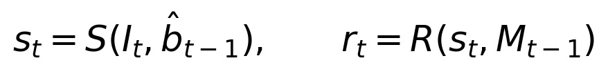
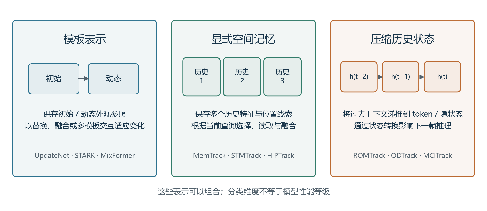
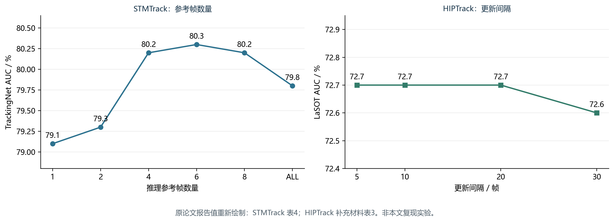
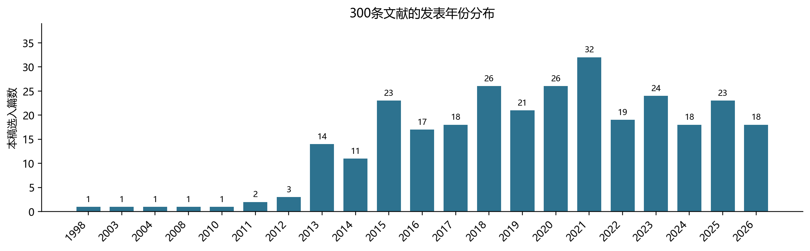

Template Updating and Memory Mechanisms in Visual Single-Object Tracking: A Survey
文献扩展阅读稿 v2.0｜2026年10月25日｜300条参考文献 本稿采用文献分析与已发表结果整理，未实施统一环境下的算法复现实验。表中数值均注明原始出处；本文归纳的分析框架、示意图和讨论不代表提出了新的跟踪算法。本版将参考文献扩展为300条，并补充机制分析与主题索引；书目核验、全文精读和实验复现分别记录。作者、单位与基金信息由实际作者确定。
视觉单目标跟踪需要依据首帧提供的目标信息，在连续视频中维持实例身份并估计目标位置。目标形变、视角变化、遮挡和相似物干扰使固定外观表征逐渐失配，而依赖自身预测进行更新又可能引入错误观测并造成累积漂移。模板更新与记忆机制因此成为连接瞬时观测和长期目标表征的重要环节。围绕外观适应性、身份稳定性与计算成本之间的关系，本文对相关研究进行综述。首先，区分模板、历史样本、记忆状态与模型参数，建立涵盖候选生成、可靠性判断、记忆写入、容量管理和历史读取的分析框架；其次，从更新时机、融合算子和污染抑制分析模板更新方法，并从记忆内容、时间组织、样本选择与读取方式比较显式记忆和隐式状态传播方法；进一步，梳理常用跟踪基准与评价协议，结合可追溯的公开报告值和原文消融结果讨论方法差异。文献证据表明，历史信息的有效性取决于观测可靠性、信息互补性与读取机制的协同，增加历史数量或提高更新频率并不构成普遍有效的策略。最后，结合在线适应、生成式时序建模和邻近任务的记忆设计，讨论更新价值估计、污染记忆修复、资源约束下的历史压缩以及可解释评测等问题，为跟踪方法设计和实验分析提供参考。
关键词：视觉单目标跟踪；模板更新；时序记忆；外观建模；跟踪漂移；可靠性评估
Visual single-object tracking maintains the identity of a target and estimates its location throughout a video given an initial bounding box. Deformation, viewpoint changes, occlusion, and similar-looking distractors can make a fixed appearance representation inadequate. Conversely, updating the representation using the tracker's own predictions may introduce erroneous observations and accumulate drift. This survey examines template updating and memory mechanisms through the trade-offs among appearance adaptation, identity preservation, and computational cost. It first distinguishes templates, historical samples, memory states, and model parameters, and develops an analytical framework covering candidate generation, reliability assessment, memory writing, capacity management, and retrieval. Template updating methods are then compared in terms of update timing, fusion operators, and contamination control. Explicit memory and implicit state propagation are discussed according to their stored content, temporal organization, sample selection, and reading mechanisms. Common benchmarks and evaluation protocols are reviewed, followed by an analysis of traceable published results and within-paper ablations. The available evidence indicates that the utility of history depends on observation reliability, complementary information, and the retrieval mechanism; neither a larger memory nor more frequent updating is universally beneficial. The survey concludes with challenges in estimating update utility, repairing contaminated memory, compressing history under resource constraints, and designing interpretable evaluations. The quantitative evidence in this article is compiled from published sources rather than newly conducted benchmark experiments.
Keywords: visual single-object tracking; template updating; temporal memory; appearance modeling; tracking drift; reliability assessment
视觉单目标跟踪以视频首帧中的目标标注为起点，逐帧预测同一实例的位置与范围。与识别图像中某一类别的目标不同，跟踪必须持续回答“当前候选是否仍是最初指定的那个对象”。当目标发生姿态变化或与相似对象交会时，类别语义保持一致并不足以保证实例身份正确。因此，跟踪系统不仅需要区分目标与背景，还需要决定目标表征应如何随时间改变。
模板更新问题具有长期研究基础。Matthews等[1]在图像对齐背景下分析了朴素模板替换导致的漂移问题；Salti等[2]进一步从外观模型自适应角度建立概念框架并开展评价。这些工作说明，适应变化与抵抗错误之间的矛盾并非由深度网络产生。随着特征学习和关系建模的发展，该矛盾逐步体现在动态图像模板、历史特征库、前景提示、原型表示及跨帧隐状态等不同载体中。载体改变了信息的保存和调用方式，却没有消除“当前观测是否可信”的基本问题。
单纯保留首帧模板可以避免后续错误样本直接改变目标表示，但当可见部位、尺度和成像条件明显变化时，初始表征可能缺少必要的适应性。相反，频繁替换模板能够迅速吸收新外观，却容易将遮挡物、背景或相似实例写入表征。更复杂的记忆系统保存多个历史状态，为多视角和非连续外观提供了支持，同时引入容量管理、冗余压缩、错误淘汰和读取选择等问题。因而，模板更新和记忆机制宜作为同一信息处理过程的不同环节加以分析。
现有综述分别从实验比较、网络架构和评测体系等角度总结视觉跟踪。Smeulders等[3]强调复杂条件下的实验评价，孙子文等[4]按照Transformer结构讨论方法演进，胡世宇等[5]系统分析单目标跟踪中的视觉智能评估，Chen等[6]覆盖传统与深度跟踪方法及其挑战。它们为理解领域提供了重要背景，但围绕“哪些历史被写入、怎样保留、何时读取”的组合关系，仍有必要对深度方法进行集中梳理。表1仅概括各综述明确的组织重点，不将未在摘要中突出某一问题等同于全文未涉及该问题。
表1 相关综述的组织重点及本文分析位置
| 文献 | 组织重点 | 对本文的启示 | 本文进一步关注的内容 |
|---|---|---|---|
| Salti等，2012[2] | 外观模型自适应及其评价 | 更新错误与适应能力应联合分析 | 深度模板、显式特征记忆与隐式状态的联系 |
| Smeulders等，2014[3] | 跟踪器在复杂视频条件下的实验比较 | 方法优势需要在不同条件下检验 | 写入、管理、读取各环节的失效解释 |
| 孙子文等，2024[4] | Transformer跟踪架构及性能 | 特征交互结构影响目标表达 | 同类架构内部不同历史利用策略 |
| 胡世宇等，2024[5] | 任务、环境、对象与评估方式 | 结论需要与评测协议一致 | 记忆有效性及错误传播的诊断 |
| Chen等，2025[6] | 传统与深度跟踪的综合研究进展 | 提供方法谱系和基准背景 | 跨架构比较模板更新与记忆机制 |
本文以首帧边界框初始化的RGB视觉单目标跟踪为范围，重点讨论与目标表征更新直接相关的代表性研究。多目标跟踪中的完整轨迹分配、多模态传感器融合和以像素掩码为最终输出的视频目标分割不作为主体。在线参数优化仅在解释模板与模型更新差异时纳入。对于利用预测前景掩码构建内部记忆、最终输出边界框的方法，仍按其跟踪任务进行讨论。
文献整理以截至2026年10月25日能够核验的会议论文、期刊论文及作者公开版本为依据，结合“template updating”“memory network”“historical prompts”“temporal token”和“visual tracking”等关键词及引用链选择代表工作。优先使用正式发表版本，必要时使用对应作者版本核对机制与表格。本文属于问题导向的叙述性综述，不宣称穷尽所有研究，也不以未经记录的检索数量表述系统筛选过程。其分析重点有三方面：以共同流程描述模板和记忆更新；解释可靠性、历史覆盖与计算开销之间的关系；通过来源明确的文献结果讨论机制证据及其适用边界。
进一步扩大文献范围，需要同时补足历史来源和邻近任务的边界。张长弓等从相关滤波、孪生网络、元学习、注意力及循环网络等角度归纳深度单目标跟踪，李成龙等讨论多模态视觉跟踪的互补性与融合问题[47,48]。这两类组织方式表明，网络结构、输入模态与更新机制是可以交叉的维度。本稿仍以首帧边界框初始化的RGB单目标跟踪为主线，仅在说明历史写入、信息选择或状态恢复时，引入语言、多模态和视频分割研究。扩展文献按16个主题形成300条记录，主要用于建立机制之间的联系与阅读入口；具体覆盖范围和证据层级见第4.6节。
给定视频帧序列I₁,…,Iₜ及首帧目标框b₁，跟踪器需要输出每一时刻的预测框。目标框可以由中心位置、宽度和高度表示。在线跟踪允许使用当前帧和过去帧的信息，不能将未来图像或当前真值框用于预测与更新。首帧标注提供初始实例信息，后续定位结果则由模型估计，其可靠性通常随场景变化。
在部分方法中，当前搜索区域依据上一帧位置裁剪；在另一些方法中，系统允许扩大范围或实施全局重检测。记忆机制对定位有帮助的前提，是目标仍处于可供比较的候选空间。若局部搜索已排除真实目标，即使历史表征准确，当前读取也未必能够修复定位。因此，研究更新与记忆时应同时交代搜索方式，而不能将所有跟踪失败归结为外观遗忘。
本文将保留到下一时刻、能够影响目标定位的信息统称为历史状态M。它既可以是图像模板、特征条目和原型组成的显式存储，也可以是递归传播的隐向量。这是一种便于分析的抽象，并不意味着各方法都具有实现上可独立访问的记忆库。
模板是用于描述或匹配当前目标的参照表示。它可以直接来自首帧图像，也可以来自后续高质量观测或多个观测的融合。记忆的范围更广，除用于匹配的外观外，还可包括位置提示、背景信息、可靠性分数和历史候选关系。模型参数则决定如何提取特征、计算关系和预测位置。更新模板或记忆未必需要梯度优化，而更新模型参数也不一定表现为替换某一张图像模板。
MOSSE[7]和KCF[8]等相关滤波方法说明目标表征可以与在线学习的判别模型紧密关联；SiamFC[9]则通过离线学习的匹配函数处理模板与搜索区域。ECO[10]在样本管理和模型更新方面进行设计，DiMP[14]学习目标判别模型的预测过程。这些工作与直接缓存深度特征具有共同的信息利用目标，但其适应对象不同。将所有在线变化都称为“模板更新”，容易掩盖计算开销和优化过程上的差异。
同样，Transformer结构不自动意味着系统具有长时序记忆。注意力可以只在当前模板—搜索图像对之间计算，也可以访问跨帧持久保存的信息。应以状态是否跨帧保留、信息来自哪些时刻以及怎样参与下一次推理作为判断依据。长短期记忆描述保留或更新尺度，也不能直接替代基准对目标消失、重检测和重置条件的定义。
在深度方法之前，历史信息已通过状态概率和外观统计参与跟踪。CONDENSATION用概率分布传播描述不确定状态，基于核的目标跟踪利用外观分布进行定位，增量子空间学习则随新观测更新目标外观表示[36–38]。它们分别提示三个不同问题：运动状态如何递推、当前区域如何与目标匹配、外观模型如何吸收变化。概率状态、外观直方图和子空间参数都可保留过去信息，但不能因此将它们视为具有相同读写接口的记忆库。
判别式跟踪进一步将更新表示为在线分类或结构化预测。多示例学习缓解训练样本标注不精确的问题，Struck将目标定位与结构化输出联系起来；CSK利用循环结构提高核方法计算效率，DSST和连续卷积算子分别扩展尺度估计和连续空间建模能力[39,41,42,44,45]。这些基础工作有助于理解后续样本质量估计、目标判别模型和高效状态更新，而不能仅因为年代较早就在讨论中略去。
表2 更新与记忆研究中的概念边界
| 对象 | 典型载体 | 主要变化方式 | 分析时需要说明的问题 |
|---|---|---|---|
| 外观模板 | 图像裁剪、空间特征 | 替换、融合、重编码 | 新模板从何处获得 |
| 历史样本 | 特征与位置、伪标签 | 增加、重加权、合并、淘汰 | 是否包含背景及错误标注 |
| 显式记忆 | 键值库、原型集合、多模板池 | 写入、选择、检索 | 容量和读取成本如何变化 |
| 隐式状态 | token序列、递归隐状态 | 跨帧递推 | 哪些历史被压缩，能否修正污染 |
| 模型参数 | 分类器、滤波器、网络权重 | 在线优化 | 是否额外反向传播及更新哪些层 |
为了统一描述不同方法，可把历史利用过程概括为以下形式。其中s表示当前搜索表征，r表示历史读取结果，c表示候选信息，q表示可靠性或质量信号；各符号用于机制比较，不对应新提出的跟踪算法。


在这一流程中，历史读取先影响当前预测，当前预测再决定后续写入内容。q可以来自响应峰值、学习的分数、不确定性或其他一致性信息，部分模型也会联合预测位置与可靠性。对于初始模板长期保留的方法，可将首帧信息作为固定锚点并入读取或写入过程。对于隐状态传播方法，U并不一定是离散的插入操作，也可以是逐帧递归变换。
该闭环揭示了错误累积的条件：当一次偏移定位产生不可靠候选，而更新机制仍接纳该候选时，错误不仅影响当前帧，还可能改变以后对目标的判断。相反，完全拒绝新观测虽然切断了这一路污染，却会限制系统对真实外观变化的响应。因此，更新策略的目标应理解为控制有用信息进入和有害信息传播之间的关系。

图1 历史读取、当前定位和状态更新的统一示意。图由本文归纳绘制；虚线表示跨时刻传递，并非某一具体方法的网络结构。
本文使用记忆内容、写入时机、更新算子、管理规则、读取方式和资源成本六个维度描述方法。各维度能够组合，不构成互斥的算法类别。例如，一个方法既可以按固定间隔触发更新，也可以在该间隔内筛选最高质量候选；一个系统也可以同时保留初始模板、动态模板和跨帧隐状态。
第2节侧重候选观测怎样被接纳并改变表征，第3节侧重已接纳历史怎样组织、压缩和参与定位。同一工作在两节中出现时，仅分析对应环节。这样能够避免按模型名称逐一复述全文，也便于发现不同架构下相似的设计选择。对方法优劣的讨论分为机制解释、原文实验证据和本文推断三层；推断不应写成已经由统一实验确立的结论。
候选模板通常依据当前预测框从图像或特征图中提取。其质量不仅由目标是否存在决定，还受边界框偏移、目标可见程度、背景占比和裁剪尺度影响。一张图像可以整体清晰，但目标区域已经被错误框选；一个框也可能中心正确，却包含较多干扰物。因此，模板质量不能简单等同于图像清晰度或分类置信度。
固定首帧模板提供身份锚点，减少了后续伪标注直接进入参照表示的机会。SiamFC[9]所代表的匹配范式说明，离线训练得到的表示能够在不逐帧优化网络参数的情况下执行跟踪。然而，固定参照需要特征本身具有足够不变性；当目标新出现的可见部位与首帧差异较大时，仅依赖初始视图可能受到限制。动态候选补充了这种外观覆盖，同时使系统暴露于自身定位错误。
候选生成和质量判别应分开讨论。前者决定哪些信息有机会进入更新过程，后者决定是否接纳。即使可靠性评估准确，如果候选只覆盖局部背景，后续门控也只能选择拒绝，不能凭空恢复缺失的目标信息。相应地，提高候选空间覆盖与提高写入准确性属于互补方向，二者的贡献应在实验中分别分析。
周期更新按照预设帧间隔接纳新观测，具有实现简单、时延可预测的优点，但不直接判断目标是否处于遮挡或剧烈变化状态。事件触发更新依据置信度、外观变化或其他信号决定更新，其适应性更强，却依赖信号是否可靠。两者可以组合：用时间规则限制成本，再用质量规则选择候选。
早期相关滤波研究使用响应统计描述匹配状态。MOSSE[7]讨论了利用峰值旁瓣比识别遮挡或失败情况，提示更新决策需要参考响应的整体结构。对于深度跟踪，学习一个独立分数分支可以将更新选择与定位过程连接。STARK[18]通过分数头控制动态模板更新；MixFormer[20]则结合多模板信息交互与模板质量选择。它们展示了把更新时机作为系统设计环节的思路，但具体间隔、门限及模型版本仍需分别记录。
定位分数与写入价值并不等价。分数高可能意味着当前候选容易与已有模板匹配，却不意味着它能补充新的外观；相反，外观变化较大的真实目标可能得分较低。相似干扰物还可能获得较高分数，使单一门限同时面临误接纳和误拒绝。因此，可靠性评估至少包含身份正确性、定位准确性与新增信息价值三个不同问题。
不确定性提供了另一种描述状态的方法。PrDiMP[15]从概率回归角度讨论目标状态估计，说明置信分数需要明确的统计含义。UncTrack[25]进一步将定位不确定性与原型记忆结合，以历史信息辅助可靠性判断，并将高置信样本反馈至记忆。该路线的意义在于把“估计是否可靠”显式纳入更新过程，但其分数是否跨场景校准，仍需要独立评价，不能由平均跟踪精度替代。
直接替换将新候选作为下一阶段参照，能够快速响应外观变化，但同时放大了对单次观测的依赖。递推融合用新旧信息的加权组合平滑变化。对同维特征，其一般形式可表示为：

这里的η表示接纳新候选的程度；拒绝更新可对应η为0，完全替换可对应η为1。该式只是简化模型，不能直接套用于所有图像模板、多槽记忆和token结构。若学习率长期保持较小，系统保留较多旧信息；若长期偏大，表征对最新观测更加敏感。实际效果还取决于特征空间与变化速度。
将η固定为常数时，递推过程隐含地按照时间距离分配权重，但没有显式区分历史质量。某些高价值观测可能因为时间久远被逐渐稀释，而连续错误观测可能不断强化。由此可见，平滑与可靠性控制解决的问题不同：前者减弱瞬时变化，后者判断变化是否应该被吸收。仅调整学习率并不能保证避免身份漂移。
UpdateNet[13]以学习方式构造模板更新，利用初始、累积与当前模板信息预测更新后的表示。与手工设定融合规则相比，该思路能够让更新算子利用训练数据中的外观变化规律。另一方面，离线学到的策略依赖训练时所见的变化和错误分布；真实跟踪中若出现训练阶段较少经历的污染，策略可能仍无法作出理想选择。这一风险属于对学习式更新适用条件的分析，不能仅凭方法名称判断其鲁棒性。
模板更新与判别模型优化也存在互补关系。DiMP[14]通过样本预测目标判别模型，ECO[10]控制样本表示与模型更新过程。此类方法借助背景信息提高判别性，适应发生在模型或训练样本层面。它们与前向更新模板的开销不同，比较时应明确优化次数、更新对象及样本维护方式，避免只比较一次网络前向传播的时间。
初始模板是唯一直接由初始化标注得到的身份参照，因此常被用于约束后续更新。Matthews等[1]在其研究设置中利用初始模板纠正更新漂移，MemTrack[12]通过门控残差方式控制从外部记忆引入的变化。二者的实现和任务细节不同，但都体现了保留可靠参照、限制无约束变化的思想。
首帧信息并非在所有时间都最具辨识力。严重视角变化或分辨率下降会削弱其与当前目标的匹配。因此，保护初始锚点应理解为保留可用证据，而非要求初始外观始终主导输出。多模板系统可以让初始表示与新观测共同参与关系建模，但仍需防止错误候选通过融合影响整体判断。
拒绝更新是另一种重要手段。当观测处于遮挡、出视野或高度歧义状态时，保持历史不变可以避免新增污染。不过，长期拒绝也可能使系统失去新姿态的信息。实际策略需要兼顾保守性和恢复条件：何时重新接纳观测，重新接纳前需要多少一致证据，以及旧记忆是否仍适用。若某方法没有明确的恢复或重检测过程，就不应将其“暂停更新”解释成完整的丢失恢复能力。
相似实例造成的污染尤其难以依赖单帧外观识别。KeepTrack[29]通过候选关联传播目标与干扰物身份，Siam R-CNN[28]利用目标及潜在干扰物的历史轨迹辅助决策。这些工作说明，避免错误更新可以借助外观以外的时间关系；但它们同时改变候选搜索和身份决策，相关收益不能全部归于模板更新。
表3 代表工作中的更新对象与决策机制
| 方法 | 主要更新对象 | 决策或融合线索 | 与本主题相关的作用 | 比较时的边界 |
|---|---|---|---|---|
| MOSSE[7] | 相关滤波模型 | 递推统计、响应可靠性 | 将适应与失败判断联系 | 不等于深度模板库 |
| ECO[10] | 样本表示与判别模型 | 紧凑样本管理、保守更新 | 控制冗余及更新成本 | 包含在线优化 |
| MemTrack[12] | 外部记忆与读出模板 | 控制器、门控残差 | 限制记忆对初始参照的改动 | 控制器与外观匹配共同作用 |
| UpdateNet[13] | 累积模板特征 | 学习式新旧模板组合 | 学习更新算子 | 依赖训练时的变化分布 |
| STARK[18] | 动态模板 | 学习的分数控制 | 选择后续参照 | 不同版本的模板配置需区分 |
| MixFormer[20] | 在线模板 | 周期与质量筛选结合 | 接纳质量较高的候选 | 不能归为单一互斥类别 |
| UncTrack[25] | 原型记忆 | 定位不确定性与置信信息 | 将可靠性判断连接到写入 | 分数校准需另行验证 |
从这些设计可以看出，更新的关键不在于是否采用某一类骨干，而在于候选来源、写入判断与融合方式能否相互配合。候选质量较高时，简单规则可能已经足够；观测长期不可靠时，复杂融合也不必然有效。因而，实验应分别考察更新时机、候选质量和更新算子的作用，不能只以“是否更新”这一标签概括全部差异。
模板更新的研究背景还包括局部外观建模与在线样本选择。部件模型、可靠图像块、稀疏表示、字典学习和局部特征投票分别从不同角度减少背景或遮挡区域的影响[53,56,58,61,67,79,82]。局部直方图、显著区域、空间加权描述和全卷积表示则改变候选样本中的信息分布[63,69,73,74,81,85]。这些方法不一定保存显式长时记忆，但共同说明：历史条目是否有用，取决于它在被存储之前包含了什么，而不只取决于之后采用哪种融合算子。
相关滤波路线将这一问题体现为训练样本、正则化和判别响应之间的关系。空间正则化、背景感知学习、通道或空间可靠性约束，以及时空正则化等设计，为抑制不适当的历史学习提供了不同途径[89,101,102,106,109,113]。其中，自适应训练集去污染方法联合估计外观模型和样本质量权重，使潜在错误样本的影响减小[92]。与简单删除低置信度帧相比，这种处理强调连续的样本贡献估计；其代价则与模型求解和样本维护相关。
从这一视角看，模型中“有历史”和“能正确使用历史”是两个层次。多个学习器、不同寿命的字典以及局部可靠性分支，能够提供有差异的信息来源[60,61,65,76,80]；但若它们依赖同一错误定位生成正样本，信息源数量增加也可能放大共同偏差。合理的比较应说明分支之间是否具有不同更新周期、观测来源或校验依据，避免把简单的模型数量解释为独立证据数量。
MDNet通过跨视频学习共享表征，并在测试序列中更新目标相关分类层；这类方法使“离线学到的通用能力”和“在线适应当前实例”具有清楚分工[152]。连续训练卷积网络、集成正则化、残差学习和梯度引导网络进一步探索在线适应方式[98,155,157,167]。在线变化可能发生在分类器、特征变换或目标模型中，因此比较其更新策略时，需要同时报告优化对象、可训练参数量与每次更新的计算成本。
Meta-Tracker通过元学习改善后续在线适应的初始化；ROAM使用递归优化器学习目标模型的更新过程；Meta-Updater则将问题明确为当前时刻是否适宜更新，并结合几何、判别和外观线索进行序列判断[163,168,170]。它们回答的问题并不相同：初始化决定更新从何处开始，优化器决定如何移动，更新控制器决定是否允许这次移动。将三者并列分析，比笼统称作“自适应更新”更有解释力。
动态孪生网络、目标条件化变换和紧凑潜变量网络试图在较低成本下引入实例适应能力[131,132,158]；动作决策、强化学习策略和超参数学习则将部分跟踪行为转化为决策问题[156,159–162,164]。相关结果提示，可以学习的对象不仅是模板内容，也包括搜索、选择和更新控制。但仅有强化学习训练方式，并不能证明模型学习了记忆写入策略，应根据实际动作空间和奖励定义判定。
孪生匹配框架中的更深骨干、区域提议、分类回归头、旋转等变性和边界框精化等改进，也可能明显影响跟踪性能[120,126,128,129,137,139,146]。这些研究为更新机制提供了不同强度的基础跟踪器，却不应自动记为更新模块本身的收益。尤其在比较固定模板和动态图像模板时，定位头、搜索范围及训练规模需要作为混杂因素单独控制。
自监督跟踪关注如何从未标注视频中获得可靠训练信号，代表工作包括无监督深度跟踪、渐进学习及无标注视频训练等[197–200]。DropMAE和掩码外观迁移利用预训练设计增强跨帧关系或实例表征，新的上下文提示与噪声学习则进一步研究无标注条件下的上下文建模[201–203]。这些方法主要改变训练信号，不能仅凭存在跨帧对应就认定推理阶段保存了可更新记忆。训练时的伪标签污染与测试时的历史污染在原因上有关联，但干预位置不同。
参数高效微调也需要作类似区分。LoRAT研究怎样将大规模预训练表征以较少可训练参数适配到跟踪任务，SPMTrack结合混合专家和时空关系建模进行参数高效微调[174,175]。它们为训练成本与时序建模提供参考，却不意味着测试视频中必须逐帧执行梯度更新。反之，PURA面向RGB-T测试时适应研究参数更新与恢复，这属于另一类运行阶段的状态变化[251]。综述应把“离线任务适配”“在线实例更新”和“测试时域适应”分别列明。
外部扰动能够帮助分析可靠性判据的脆弱性。对抗纹理、响应抑制、时间一致攻击、模糊攻击与防御研究提供了不同的压力测试方式[255–260]。对于更新与记忆研究，除观察攻击期间的定位下降，还应关注扰动移除后是否持续失效、污染条目是否继续被读取以及冻结写入能否阻断传播。这些是本文建议补充的诊断问题，不能把攻击论文的总体性能变化直接解读为它们已完成相同的记忆污染实验。
显式记忆保存可以单独访问的历史条目，例如模板图像、空间特征、前景掩码或原型。它能够保留多种外观，也便于根据时间、质量或相似性检索，但存储与读取成本通常随条目或token数量增加。隐式记忆则将历史压缩为递归状态，避免显式维护大量样本；其代价是单条历史贡献不容易追溯，受到污染后也较难只移除某个观测的影响。
MemTrack[12]较早探索由LSTM控制外部记忆读取和写入，展示了无需在线微调全部网络也能够适应外观变化的路线。STMTrack[19]进一步利用时空记忆保存与目标相关的历史信息，通过当前查询与历史空间特征之间的关系辅助定位。两者均利用历史内容，但记忆粒度、控制方式与读取结构不同，不应仅因名称中包含memory而归为相同实现。
HIPTrack[23]将历史视觉特征与经过处理的前景信息组合成提示。前景信息给历史外观提供空间约束，使读取过程有机会区分目标区域与背景区域。此类内部掩码属于构建跟踪表征的中间信息，不改变其边界框跟踪的任务属性。其骨干冻结也不等于整个方法不需要训练，新增提示模块的学习过程仍应说明。
ODTrack[24]通过跨帧token传播承接历史上下文，MCITrack[26]利用隐状态和上下文融合在视频序列中传递信息。它们代表了将时间信息逐帧递推而非只更新少量图像模板的思路。隐状态可以保持固定维度，但固定维度并不意味着长期信息无损保存；哪些内容保留取决于状态转换与训练目标。

图2 图像或特征模板、显式空间记忆以及跨帧压缩状态的概念比较。三种方式可在同一系统中组合，图中并列关系不表示性能排序。
短期信息通常更贴近当前外观，能够响应姿态、照明与局部遮挡变化；较早的信息可能保留稳定身份线索，在当前观测出现歧义时提供参照。两类信息的作用是互补的，但时间远近本身不是质量保证。最近的帧也可能已经跟踪错误，较早的帧也可能过时或缺少有效细节。
MUSTer[11]使用短期相关滤波与长期关键点匹配组成双存储结构，说明长短期协同早于近年来的深度token模型。MUTrack[27]在新的目标表示框架中组织长短期记忆并进行交互，其实现不同于MUSTer。把两者放在同一时间尺度问题下比较，有助于识别共同动机；把它们解释成同一模块的简单升级，则会忽略表示和优化的变化。
多模板池可以同时保存多个时间点或视角的信息，避免单一递推向量将互不兼容的外观平均化。但是，候选越多，读取过程越需要回答当前应相信哪一项。当背景或干扰物也被保留时，历史覆盖范围扩大可能伴随歧义增加。因而，多时间尺度设计应同时给出写入策略、容量规则和冲突处理，而不能仅报告模板数量。
ROMTrack[22]同时建模固有与混合模板信息，并利用变化token承接外观上下文，体现了稳定身份信息和动态交互可以在表示层共同存在。这里的“动态”不一定意味着每次都重新裁剪一张模板图像；信息也可以通过跨帧特征状态进入后续计算。分析时应追踪实际的数据流，而不是仅依据模块名判断更新类型。
有限记忆必须选择保留哪些内容。按时间淘汰便于控制容量，但可能丢失再次出现的关键外观；按质量选择可以减少明显错误，却可能集中保存相似的高分样本；追求多样性能够增加视角覆盖，也可能保留与当前目标状态关系较弱的条目。不同原则解决的问题并不相同，实际管理通常需要在可靠性、互补性和资源限制之间折中。
ECO[10]以紧凑方式建模训练样本分布，为减少冗余提供了历史参照。在显式特征记忆中，类似问题转化为是否保留新的空间条目、是否压缩相近特征以及如何限制读取范围。二者均关心样本代表性，但ECO的样本用于学习判别模型，特征库则可能直接进入当前查询，两种存储用途应保持区分。
容量与有效历史长度也不能混为一谈。相同条目数量在不同采样间隔下覆盖的时间范围不同，相同帧数在不同分辨率下也对应不同token数量。报告“记忆大小”时，至少应明确单位是帧、模板、原型还是token，并交代是否永久保留某些初始条目。否则，不同论文中的容量无法直接比较。
记忆管理还涉及错误的生命周期。写入时未发现的错误可能在后续观测中暴露，但系统是否允许修改旧条目、降低其权重或将其移除，是不同于写入门控的设计问题。对于隐式状态，这一问题更加困难：被压缩的信息不一定保留明确的来源标记，简单重置又可能丢失全部有用历史。该现象提示，记忆修复应作为独立研究问题，而不能默认由增加记忆容量解决。
读取的目的不是再现所有过去观测，而是为当前定位提取有帮助的信息。显式键值记忆可以通过当前查询与历史键的相似性获得权重，再聚合对应值；模板池可以通过特征匹配或注意力进行交互；隐式状态则可作为下一帧推理的上下文。不同方式影响所读取信息的空间精度和计算复杂度。
对加权聚合类读取，可使用以下示意式描述：

其中v表示历史内容，a表示由查询关系决定的权重。这不是所有记忆模型的共同公式，例如包含递归门控或非线性交互的方法未必能完整写成该式。其分析价值在于区分“保存了有用历史”和“实际读取了有用历史”：即使目标条目仍在库中，若权重被相似背景吸引，历史也不能有效支持定位。
TrDiMP相关工作[17]通过Transformer传播模板间和模板到当前帧的时间线索；TransT[16]强调模板与搜索特征的注意力融合，OSTrack[21]将特征学习与关系建模结合。后两者为高效目标交互提供结构背景，但注意力融合本身不等于丰富的持久历史。比较记忆系统时，应把“关系算子能力”与“历史信息供给”两个因素区分开来。
空间记忆可以保留局部对应，对目标部分可见的情况具有分析价值；压缩原型则能够减少存储，但可能损失局部姿态差异。不同载体没有脱离任务条件的绝对优劣。小目标、背景占比较大的裁剪、长期外观变化和较大视角切换，对表征粒度的需求也可能不同。相关判断应通过属性分析与受控实验检验。
表4 代表方法的历史载体与读取方式
| 方法 | 历史信息载体 | 主要组织或传播方式 | 读取与定位的联系 | 需要关注的问题 |
|---|---|---|---|---|
| MUSTer[11] | 短期模型、长期关键点 | 双存储协同 | 短期输出与长期匹配互补 | 恢复条件和关键点适用性 |
| MemTrack[12] | 外部记忆条目 | 控制器读写 | 读出内容经门控结合初始模板 | 写入和读取错误的耦合 |
| STMTrack[19] | 历史空间特征 | 参考帧记忆 | 当前查询与历史空间关系 | 帧数与读取开销 |
| MixFormer[20] | 初始及在线模板 | 多模板交互 | 模板与搜索区域混合注意力 | 模板选择和骨干作用混杂 |
| ROMTrack[22] | 模板信息、变化token | 稳定与动态表示结合 | 外观上下文进入当前交互 | 特征变化不等于图像替换 |
| HIPTrack[23] | 历史特征与前景信息 | 历史提示记忆 | 查询生成提示辅助定位 | 提示精度与背景污染 |
| ODTrack[24] | 跨帧token | 在线递推传播 | 历史上下文进入下一帧推理 | 压缩状态的信息损失 |
| UncTrack[25] | 原型与可靠性信息 | 高置信历史更新 | 历史辅助状态可靠性判断 | 不确定性与身份歧义 |
| MCITrack[26] | 隐状态 | 状态空间递推与融合 | 上下文进入视觉特征 | 状态污染与可解释性 |
| MUTrack[27] | 长短期记忆 | 统一表示与交互 | 近期适应与身份稳定互补 | 不同时间尺度的权衡 |
图3给出若干代表工作在信息处理问题上的联系，而非唯一的技术演进顺序。显式和隐式路线可以并存，固定模板也可以与新记忆模块组合。机制比较的目的在于确定收益来自哪些信息和哪些操作，而不是为所有模型指定一个简单等级。

图3 代表性研究线索。图中年份对应选定正式版本；仅展示与本文主线密切相关的节点，不表示完整文献谱系。
总体而言，写入决定历史是否可信，管理决定哪些历史仍然可用，读取决定可用历史是否真正参与正确定位。这三个环节中的任一个不足，都可能限制最终表现。由此产生的设计原则不是无限增加历史，而是让可靠、互补且可有效读取的信息在资源预算内持续存在。
长期跟踪需要处理目标离开视野、完全遮挡和重新出现。TLD将跟踪、学习与检测联系起来，长期相关跟踪、全局候选搜索以及并行跟踪验证等工作进一步探索局部定位与重新发现目标的配合[40,205–208]。这些研究说明，外观记忆即使保留正确，也仍需搜索或检测模块提供真实目标候选。历史保留和搜索恢复因此应联合考虑。
MEEM直接利用跟踪器的历史快照组成专家集合，在需要时选择历史专家恢复当前模型，以应对不良更新[43]。这一思路把“错误已经发生后怎么办”纳入更新系统。与永久冻结初始模板相比，模型快照能够保留多个适应阶段；与持续覆盖当前模型相比，它为回退提供了可访问状态。代价是增加快照维护和专家评价负担，而恢复依据本身也可能受错误观测影响。
RTracker采用正负样本的树结构记忆，将跟踪器与检测器的控制流程关联起来，以支持目标状态判断和自恢复[210]。与仅存目标正模板的组织方式相比，负信息使系统能够回答“某个相似候选为何不应被接受”。KeepTrack和利用场景信息的研究同样提示，对干扰候选及周围环境的建模可以补充目标外观表征[29,141,209]。不过，负信息也可能随场景改变而失效，不能无限期保持与目标正身份相同的可信度。
SAM2相关跟踪工作使记忆组织再次成为明确的性能瓶颈。DAM4SAM针对干扰物设计记忆和更新机制，说明通用视频分割能力与稳定的目标身份维持并不完全等价[211]。从MEEM的模型快照到RTracker的正负样本结构，再到面向基础模型的干扰感知记忆，可归纳出三个互补的恢复层次：回退模型状态、重新组织候选证据、控制历史条目的写入与调用。这是本文建立的分析关系，不代表三类方法之间具有已验证的直接替代关系。
注意力机制为历史读取提供了可学习的关联方式，但不同模型所关联的对象并不一致。层级特征Transformer、判别式Transformer、循环移位窗口、注意力内嵌注意力以及前景背景分布建模等工作，分别调整交互层级、局部性或信息来源[177–179,182,184]。上下文感知注意力也可以改善当前模板与搜索区域的特征关联[49]。这些结构改进应与跨帧持久状态区分，避免把空间上下文直接解释为长期记忆。
Zhou等通过相关性注意力与全局表示记忆，研究如何为当前搜索区域读取相关历史，而非无差别使用全部参照特征[51]。它强调记忆内容与当前查询之间的条件关系：同一条历史在不同帧中的价值可以不同。AQATrack以自回归查询描述目标的瞬时变化，并将学习到的动态查询与初始模板结合[187]。前者强调历史条目的选择与读取，后者强调可递归更新的查询状态；两者说明显式存储与压缩状态的区别，最终仍需落到信息如何进入当前预测。
自回归跟踪进一步将输出状态也纳入递归过程。ARTrack与SeqTrack分别从轨迹演进或序列到序列预测组织目标定位，ARTrackV2和自回归预训练等工作继续探索时序条件的使用[189–191,193]。这一类方法中的历史未必以图像模板形式保存，也可能由坐标、查询或序列状态表达。坐标状态适于描述运动，却不能完全替代外观身份；外观token有助于实例辨别，却未必显式编码可信运动。因此，两类信息的组合和误差传播应分别分析。
DreamTrack从历史向未来学习时序变化，TGTrack引入时序生成监督；自适应容量自回归跟踪进一步把不同时间段所需的计算能力纳入设计[194–196]。这里的未来预测只能依据允许使用的历史信息形成，不能与推理时实际访问未来帧混淆。预测状态可以在遮挡或短时缺失中提供先验，但如果历史已经漂移，预测也可能延续错误。评价时应区分短时定位补偿与长期身份恢复。
2026年的DTPTrack明确讨论噪声历史导致的漂移，通过历史可靠性校准和紧凑时序先验进行引导[188]。这与早期样本去污染以及Meta-Updater的可靠更新问题在目标上相通，但所作用的载体和计算结构不同。跨时期比较的价值在于识别共同的可靠性问题，而非将新的状态表示等同于对旧问题的彻底解决。
面向资源受限场景，高效跟踪研究涵盖特征压缩、结构搜索、轻量模型和Transformer关系建模简化[212–216]。MixFormerV2利用预测token及蒸馏设计减少跟踪结构的计算负担；近年来的通用压缩、token压缩和统一剪枝进一步关注计算预算分配[50,217,218,221]。其中，对静态模板、动态模板和搜索区域同时压缩，可能改变长期身份参照与当前定位证据之间的比例，因而不能只报告总体token保留率。
“少保存历史”和“少计算当前帧”也应区分。前者改变可供未来检索的信息，后者改变当前观测的处理精度；二者可能具有不同的失败代价。层级动态执行、脉冲计算和统一高效跟踪等工作提供了不同实现入口[219,220,226]。面向记忆机制的实验应同时统计持续状态大小、峰值显存、更新频率、读取延迟与平均速度，并说明重检测或恢复阶段是否计入总成本。
无人机跟踪中的相机运动、低照度、遮挡及延迟，使这一问题更加突出。夜间域适应、背景感知Transformer、延迟感知跟踪和遮挡鲁棒模型分别针对不同条件进行设计[222–225]；新的时序学习与遮挡建模继续强调历史信息的可用性[228–230]。这些场景研究可用于构造更新机制的压力条件，但跨数据集的总分差异仍不能直接归因于某一种记忆设计。
语言跟踪从自然语言指定目标开始，逐步发展出语言与视觉参照联合建模、长短期文本上下文以及语义与实例信息结合等方法[231–237]。动态语言适应、时变状态空间模型和目标上下文对齐进一步探索语义描述随时间发挥作用的方式[238–240]。这类历史既可能包含视觉外观，也可能包含描述、语义属性或跨模态状态，能够补充单张模板中不可见的信息。
然而，语言类别描述可能同时匹配多个实例，稳定语义并不自然等于稳定身份。视觉到语言建模、单句初始化及基于语言置信度和记忆门控的方法，具有与首帧框初始化不同的可用信息[241–243]。本稿将它们作为条件化记忆的扩展，而不与标准RGB单目标跟踪成绩混列。尤其是无需边界框初始化的方法，必须在表格中明确其协议，不能仅因使用相同数据集名称就进行直接排序。
多模态历史还涉及传感器缺失、不同步和质量不一致。帧与事件联合跟踪、RGB-T模板搜索交互、视觉提示与统一模型等工作，为不同模态进入跟踪器提供了多种方式[244–249]。基于Mamba的RGBE历史建模、测试时参数更新恢复、暂时缺失模态下的动态处理和跨模态训练知识共享，则分别作用于历史建模、参数适应、信息可用性与训练过程[250–253]。这些研究不能归并为同一种“多模态记忆更新”。
严重遮挡下，事件产生的短时动态线索还可补充外观信息不足时的运动证据[254]。因此，未来的记忆可靠性可以从条目级扩展到模态级：同一时刻不同传感器的观测未必同样可信。需要研究的是何时保留哪种证据，以及模态恢复后如何校准既有历史，而不是默认融合信息越多越可靠。
视频目标分割与边界框跟踪共享跨帧对象维持问题，但输出粒度和初始化信息不同。早期视觉记忆、空间时间记忆网络，以及模板匹配与动态目标模型等工作，为逐像素历史关联提供了重要方法来源[261–264,266]。区域记忆、核化记忆、样本选择与图记忆进一步研究保存哪些位置、怎样约束匹配以及如何组织历史关系[265,268–270]。这些机制可以启发跟踪器设计，但分割掩码提供的对象边界与监督信息不能在迁移讨论中被忽略。
层级记忆匹配、位置与目标一致性、动态对齐、递归嵌入和质量感知动态记忆，分别从匹配结构、对象身份或条目质量处理历史信息[271–275]。XMem设置不同时间尺度的记忆，并通过记忆巩固支持长视频；SWEM与更高效的线性匹配方法则从表示压缩或匹配计算方面降低成本[276,277,283]。这些设计说明，记忆效率既可通过减少条目实现，也可通过改变条目的表示和读取算子实现。
RMem明确讨论限制记忆库容量，以平衡条目重要性、时效性及检索混淆[282]。这与第4.4节中“增加参考帧不保证提升”的跟踪证据在分析方向上相呼应，但属于不同任务中的独立证据。轨迹对齐检索、对象级表示和统一分割结构也为更可靠的历史读取提供了研究入口[278–281]。综述能够据此提出共同假设，却应通过各自任务中的对照实验检验，避免直接移植结论。
SAM 2将流式记忆作为视频处理的重要组成部分[46]。SAM2Long针对误差积累维护多个候选分割路径，并在完整视频处理后选择累计得分更高的路径；这提示分支保留可能有助于减轻单一路径错误，但其最终路径选择涉及的输出时机，应与严格逐帧因果评测区别说明[284]。递归动态子模型和面向输入退化的记忆条件适应，则继续探索运行成本与鲁棒性[285,286]。对边界框跟踪最值得借鉴的是可靠写入、受限容量和纠错结构，不能默认继承其初始化方式、监督信号或推理协议。
模板更新与记忆机制的价值需要在连续视频中检验。静态图像上的特征匹配难以呈现累积错误、长时间遮挡以及历史再次被利用的过程。不同跟踪基准对序列长度、对象类别、图像来源和目标消失的处理存在差异，评价时应首先明确问题，再选择基准。
OTB[30]为传统跟踪比较提供了统一数据与指标，适合分析典型挑战，但不宜单独承担对当前长时序记忆能力的判断。UAV123[31]提供低空航拍视角，能够反映相机运动和目标尺度变化。TrackingNet[32]提供较大规模训练数据与保留测试标注的评价方式。LaSOT[33]包含较长序列，常用于考察持续外观变化和困难属性。GOT-10k[34]强调训练与测试类别不重叠的one-shot评价，其训练约束需要和具体模型权重相匹配。VOT相关研究[35]则强调性能指标、数据集和评价系统的共同设计。不同年份的竞赛任务与输出形式可能不同，引用结果必须带有版本信息。
表5 常用基准与本文主题的关系
| 基准或评价体系 | 本文采用的版本指向 | 可提供的证据 | 使用时需要交代的条件 |
|---|---|---|---|
| OTB[30] | 2015论文及对应基准 | 典型外观变化与干扰 | 具体序列集合与初始化协议 |
| UAV123[31] | ECCV 2016基准 | 航拍视角的尺度与运动变化 | 不与其他无人机数据集混称 |
| TrackingNet[32] | ECCV 2018基准 | 多场景泛化与公开服务器评价 | 训练集、测试服务器及模型版本 |
| LaSOT[33] | CVPR 2019基础版本 | 长序列及困难属性分析 | 与后续扩展集分开报告 |
| GOT-10k[34] | 正式发表版本及对应协议 | 未见类别上的泛化 | one-shot训练限制及外部预训练说明 |
| VOT[35] | 所引结果对应年份与任务 | 准确性、失败与协议影响 | 是否重置、任务类型和指标版本 |
需要特别指出，长视频不等于完整的长期重检测任务。模型在较长序列上得到较高AUC，只能说明其在该协议下的总体表现，不能据此推断它能够在任意消失后重新找到目标。目标暂时不可见时的输出定义、是否允许显式报告丢失，以及重新出现后的评价方式，都应分别说明。
边界框跟踪常使用交并比衡量预测区域与真值区域的重叠。对有效评价帧，单帧交并比可写为：

成功率曲线统计不同重叠门限下的成功比例，其曲线下面积通常记为AUC；中心位置精度依据预测中心与真值中心的距离计算；归一化精度则降低目标尺寸和图像分辨率对距离的影响[30,33]。平均重叠和固定阈值成功率也常见于相应基准[34]。具体实现中的有效帧处理、序列平均方式及门限采样应遵循基准工具，不能只根据同名指标认定数值可直接比较。
若在连续门限和相同权重的理想定义下积分，成功率AUC与平均重叠存在联系，但离散采样、序列聚合、缺失标注处理和评价规则可以造成区别。因此，不应把不同论文中的AUC、AO以及某一固定门限成功率混成一个总榜。属性组也可能相互重叠：包含遮挡的序列往往同时具有尺度变化或背景干扰，属性分析能够揭示关联，不能自动提供单因素因果结论。
评价记忆还应考虑成本。总推理时间不仅包含骨干前向传播，还可能包含裁剪、特征缓存、记忆检索、插入与在线优化。对于按事件更新的方法，平均时延可能掩盖更新帧上的较高开销，因而报告中位数或分位时延具有补充价值。显存应注明输入分辨率、批大小与记忆容量。不同硬件和实现下的FPS不宜直接作为机制效率的严格排序。
表6从HIPTrack论文的表2中选取与本文主题直接相关的四个模型，保留其报告的LaSOT与TrackingNet AUC。采用同一公开汇总表有利于追溯数值，但原表中不同方法仍可能使用不同骨干、训练和输入设置，不能将其视为控制变量实验。本稿未重新运行这些算法，也不将该表表述为截至2026年的完整性能排名。
表6 HIPTrack论文表2中的部分报告结果，单位：%[23]
| 方法名称按原表保留 | LaSOT AUC | TrackingNet AUC | 本文使用该行的目的 |
|---|---|---|---|
| MixFormer-22K | 69.2 | 83.1 | 多模板信息交互的参照 |
| OSTrack384 | 71.1 | 83.9 | 单流特征与关系建模的参照 |
| ROMTrack-384 | 71.4 | 84.1 | 稳定与动态表示组合的参照 |
| HIPTrack | 72.7 | 84.5 | 历史提示路线的参照 |
数据来源：HIPTrack作者公开版本，表2；正式论文见文献[23]，可核对版本链接见附录中的数值来源说明。
这些数值表明，不同表示与历史利用设计均可以构成有竞争力的跟踪系统，但不能据此把差异全部归因于模板或记忆。以HIPTrack与OSTrack384为例，表中LaSOT AUC相差1.6个百分点；该差值是两个已报告配置的差异，并不是在其他因素严格一致时测得的“历史记忆净收益”。若希望回答后一个问题，需要结合模块消融、训练条件和实现说明。
跨基准的差异也提示结论需要限定场景。同一对方法在LaSOT和TrackingNet上的数值间隔不同，可能与序列长度、对象分布和困难属性有关。仅凭两个总体指标不能确定主导因素。更稳妥的分析是将总体差异与原文属性结果、机制消融和失败案例结合，而不是从排行榜倒推某一设计原则必然成立。
STMTrack论文提供了推理阶段参考帧数量的比较，结果见表7。随着参考帧从1增加至6，所报告TrackingNet成功率由79.1增加至80.3；使用8帧时为80.2，使用全部历史时为79.8。该组结果说明，在这一模型和配置下，更多历史没有持续带来更高精度。使用全部历史还伴随明显的速度下降[19]。
表7 STMTrack原文表4：推理参考帧数量与TrackingNet表现[19]
| 参考帧数 | 1 | 2 | 4 | 6 | 8 | ALL |
|---|---|---|---|---|---|---|
| 成功率AUC/% | 79.1 | 79.3 | 80.2 | 80.3 | 80.2 | 79.8 |
| FPS | 43.0 | 26.6 | 29.3 | 28.6 | 22.7 | 6.5 |
注：ALL沿用原文记号；FPS保留原论文条件下的报告值，不与其他论文硬件上的结果直接比较。
表7不能单独证明下降由“错误记忆”造成，因为历史冗余、匹配歧义和实现开销等因素也可能影响结果。不过，它能够否定一种过于简单的设计假设：保存更多历史并不保证当前定位更准确。速度在相邻帧数配置之间也并非严格单调，综述应保留原始报告，不人为平滑出符合预期的趋势。
HIPTrack补充材料在LaSOT测试集上比较了更新间隔，见表8。间隔为5、10和20时，报告的AUC均为72.7；间隔为30时为72.6。该结果支持“在所考察范围内，对间隔的敏感性较小”这一限定表述，并不意味着更新频率在其他模型或场景中无关紧要[23]。
表8 HIPTrack补充材料表3：更新间隔的原文比较[23]
| 更新间隔/帧 | 5 | 10 | 20 | 30 |
|---|---|---|---|---|
| LaSOT AUC/% | 72.7 | 72.7 | 72.7 | 72.6 |
| 归一化精度/% | 82.9 | 82.9 | 82.9 | 82.5 |
| 精度/% | 79.5 | 79.5 | 79.5 | 79.0 |
来源：HIPTrack正式会议补充材料，表3。原文在测试集上展示的配置分析属于其报告内容；后续自主实验应将配置选择与最终测试区分。

图4 左：STMTrack参考帧数量与TrackingNet AUC；右：HIPTrack更新间隔与LaSOT AUC。根据表7、表8重新绘制，均为原论文报告值。两面板采用不同纵轴范围，不能比较视觉斜率判断两种方法的优劣。
综合这两组证据，可以把设计问题从“多记一些、更新快一些”转向“何种信息值得保留、怎样让读取使用互补信息”。但目前证据来自不同论文与不同配置，不足以导出通用最优容量或更新间隔。对于新方法，应以匹配的训练与验证设置重新判断。
针对本文主题，失效分析可以沿闭环逐项检查。首先，目标是否进入候选或搜索区域；其次，当前候选是否包含正确目标；再次，可靠性判断是否接纳了错误观测；最后，有效历史是否仍被保留并被正确读取。这种检查顺序能够区分搜索失败、写入污染、管理遗忘与读取歧义，避免用“漂移”一个词代替所有解释。
由这一分析出发，统一实验可以选择三个不同历史利用路线的公开模型，在同一基准和设备上记录预测框、更新时间、候选分数及记忆规模。模型间比较用于呈现系统表现；同一模型内只改变一个允许调整的变量，用于检验机制关系。若关闭某个分支破坏训练时假设，应说明其属于分布外配置，而不是默认等价的公平消融。
本文建议将“候选被错误写入的比例”“出现错误后影响持续的时间”和“历史条目实际被读取的频率”作为可探索的诊断信息。这些尚不是本文验证过的标准指标，使用时需要定义事件、阈值和统计单位，并说明真值只用于离线诊断。对于长序列，按帧独立估计置信区间会忽略时间相关性，可以考虑按完整序列进行重采样，再报告差异的不确定性。
本稿的定量部分由公开报告组成，尚不能评价各算法在统一环境下的复现差异，也不能直接测量记忆污染的因果贡献。其作用是建立可追溯的分析起点，并明确后续实验需要控制的条件。原文消融、跨论文汇总与自主实验属于不同证据层次，结论应随证据强度调整。
本次扩展以官方会议目录、期刊原始页面和出版机构登记的DOI元数据为主要入口。CVF和ECVA目录的定向检索产生1016条去重候选记录，题名筛选后结合摘要核对任务范围与机制相关性，其中267条进入本稿；其余33条来自经典文献、期刊及其他会议来源。相同工作的预印本与正式发表版本只计一条，优先采用正式版本。目录记录、来源地址和分类结果保存在配套索引中。这一过程属于围绕主题的定向整理，不能作为覆盖全部期刊、数据库和语种的系统综述检索结果。
新增的249条CVF/ECVA记录均获取了官方摘要和书目信息，另补充经典研究、中文期刊及NeurIPS、ICLR文献。摘要核对用于任务筛选和初步机制定位，涉及细节实现、具体公式和实验解释时仍需回到原文相应章节。表9给出全部300条文献的主要组织位置，每条只按主要用途归入一组，以避免统计重复；一种方法可能同时具有多个机制属性。
表9 本稿300条文献的主题组织与覆盖范围
| 主题 | 篇数 | 在本稿中的用途 | 文献索引 |
|---|---|---|---|
| 更新策略与在线适应 | 32 | 区分参数、模板和控制器更新 | [1,13–15,38,39,41,151–175] |
| 相关综述与研究定位 | 6 | 定位本文相对已有综述的组织角度 | [2–6,48] |
| 相关滤波与样本正则化 | 34 | 分析历史样本、可靠性与优化约束 | [7,8,10,42,44,45,88–115] |
| 孪生匹配与目标条件化 | 36 | 建立匹配骨架与更新收益的对照 | [9,116–150] |
| 长时跟踪与记忆恢复 | 13 | 分析回退、重检测与干扰候选 | [11,28,29,40,43,204–211] |
| 注意力与时序状态建模 | 28 | 比较历史检索和跨帧状态表示 | [12,16–27,49,51,176–188] |
| 数据集与评价设计 | 20 | 限定任务协议与证据可比范围 | [30–35,287–300] |
| 传统外观建模与局部可靠性 | 38 | 追溯局部可靠性及增量建模基础 | [36,37,52–87] |
| 视频分割中的可迁移记忆机制 | 27 | 借鉴记忆组织；保留分割协议边界 | [46,261–286] |
| 多模态历史与统一跟踪 | 12 | 讨论模态质量、缺失与历史适配 | [47,244–254] |
| 高效跟踪与资源预算 | 11 | 比较模型、token和历史存储成本 | [50,212–221] |
| 自回归与生成式跟踪 | 8 | 分析状态递推与未来预测先验 | [189–196] |
| 自监督训练与表征迁移 | 7 | 区分训练信号与推理时历史更新 | [197–203] |
| 无人机与退化观测 | 9 | 提供延迟、遮挡和成像退化场景 | [222–230] |
| 语言条件与语义更新 | 13 | 讨论语义历史与初始化协议差异 | [231–243] |
| 对抗扰动与可靠性诊断 | 6 | 提出区分当前失败与后续污染的诊断 | [255–260] |
表9中的文献索引用于指明该组研究的讨论入口，不表示每篇都采用相同的更新公式或均含独立记忆模块。分割、语言及多模态文献用于机制迁移和协议边界分析；本文不将这些任务的成绩混合为RGB单目标跟踪排行榜。

图5 本稿300条文献记录的年份分布。该图描述本稿选择的样本，不代表全领域发文量、引文影响或研究趋势强度。
表10将新增的部分关键工作放回统一框架。比较时首先确定状态载体和作用环节，再讨论它可能缓解的失效，最后回查是否存在相应消融或公平对照。这样可以减少仅按模型缩写、发表年份或总体分数排列方法所造成的误解。
表10 新增代表工作的状态载体与分析位置
| 工作 | 状态或历史载体 | 主要讨论环节 | 分析时的关键边界 |
|---|---|---|---|
| MEEM[43] | 跟踪器历史快照 | 模型恢复 | 历史模型恢复不等于图像模板替换 |
| 训练集自适应去污染[92] | 样本与质量权重 | 样本管理 | 连续减权与硬阈值拒绝不同 |
| Meta-Updater[168] | 几何、判别与外观序列线索 | 更新时机 | 决策何时更新，不直接等同于融合算子 |
| 全局表示记忆读取[51] | 查询相关的历史表示 | 历史选择和读取 | 读出的相关性与存储容量共同作用 |
| AQATrack[187] | 初始模板与自回归查询 | 压缩状态传播 | 动态查询与显式历史图库不同 |
| RTracker[210] | 正负样本树结构 | 跟踪检测协同恢复 | 须同时说明状态判断和搜索控制 |
| PURA[251] | 测试时模型参数及更新方向 | 参数适应与恢复 | 作用对象为参数；输入为RGB-T |
| XMem[277] | 多时间尺度特征记忆 | 巩固与容量管理 | 分割任务的监督与输出不同 |
| SAM 2[46] | 提示及预测相关的流式记忆 | 通用视频处理 | 需明确框、点、掩码及交互设置 |
| DAM4SAM[211] | 干扰感知历史与更新判断 | 污染抑制 | 基于SAM2的记忆改造 |
| SAM2Long[284] | 受限数量的候选路径 | 错误分支保留与选择 | 最终路径选择的时机影响因果协议 |
| DTPTrack[188] | 校准后的历史与紧凑时序先验 | 可靠读取和状态引导 | 基础跟踪器与附加模块应分别分析 |
| TGTrack[196] | 历史条件与时序生成状态 | 时序监督 | 训练生成任务不等于访问真实未来帧 |
| UTPTrack[221] | 静态、动态模板及搜索token | 统一压缩 | 压缩的不同信息来源需分别统计 |
表10是依据文献机制作出的归纳，不构成新增算法实验。对方法有效性的判断仍应与原论文的任务设置、基准和消融条件相联系；同一名称下不同输入分辨率、骨干或训练配置也应作为独立实验配置记录。
当前定位可靠与当前观测值得长期保存之间存在差别。一个高置信候选可能只是重复已有外观，新增价值有限；一个具有新姿态的候选则可能因与旧模板差异较大而得分偏低。仅用单一分数决定写入，难以同时处理身份正确性、位置准确性和信息互补性。
更具解释力的策略需要分别估计这些因素，并根据后续用途决定是否写入。短期模板强调及时适应，长期记忆更重视稳定身份和跨场景可用性，二者未必应采用同一门限。更新价值还可以结合预计的资源成本：相同信息在高分辨率特征库和紧凑原型中的保存代价不同。
这一方向的评价不能只看最终AUC。研究可以在验证集上检查分数与实际定位误差的关系，以及分数较高但身份错误的样本比例。若进一步声称某个观测能改善未来跟踪，则需要通过受控保留或移除实验检验，而不能由当前置信度直接推断。相关试验仍应保持在线因果约束，未来真值只能用于离线评价。
写入门控只能处理当时能够识别的风险。遮挡中的相似目标可能暂时产生一致响应，使错误条目通过多个时间步进入记忆。随后，错误历史又会强化相同判断，从而形成自确认循环。因此，可靠系统除了决定“写不写”，还需要回答“以前写入的内容现在是否仍可信”。
显式记忆有机会记录来源时间、预测质量和相互支持关系，为后续降权或移除提供依据。隐式状态则需要研究局部修复、分层重置或可分离状态等机制，使系统能够削弱错误影响而不清空全部历史。这些方向具有研究价值，但其有效性需要以真实失效场景检验，不能将可解释的结构设计直接视为鲁棒性保证。
恢复也应区分两种情况：目标仍在局部候选范围内但匹配错误，以及目标已经离开搜索区域或视野。前者可能通过历史重加权改善，后者往往需要搜索策略和目标存在性判断协同。记忆模块的研究若忽略这一区分，容易把重检测收益与外观更新收益混淆。
嵌入式或实时系统通常同时受显存、算力和最坏时延约束。固定帧数并不能完整描述预算，因为空间分辨率、特征维度和查询长度共同决定成本。未来方法需要将记忆容量、读取频率与特征粒度作为联合设计变量，而不是只增加外部库规模。
一个可研究的方向是按内容自适应分配表示：对重复且稳定的外观使用紧凑表示，对出现变化或歧义的时段保留更细粒度信息。另一个方向是分层读取，先用低成本表示筛选相关历史，再对少量候选执行细致交互。其价值应通过实际端到端计时验证，理论复杂度下降并不保证具体硬件上的收益。
压缩还应考虑长期可恢复性。若重要身份细节在早期被不可逆地丢弃，后续出现相似干扰时可能无法重新区分。因而，精度—成本曲线需要覆盖不同序列长度和干扰条件，避免只在短视频上选择看似最优的压缩程度。
外观信息难以独立解决所有身份歧义。KeepTrack[29]和Siam R-CNN[28]从候选关系与轨迹历史提供了不同补充，表明“记住目标”还可能包括记住哪些候选不是目标。运动、位置和相互关系可以降低错误写入概率，但在相机突变、快速机动或长时间消失时，同样可能失效。
值得进一步研究的是，系统如何根据场景变化调整不同历史信息的作用。当外观不可靠而运动连续时，位置历史可能更有帮助；当目标重新出现且运动预测失效时，稳定身份信息可能更重要。这一调整不应被简化为固定权重相加，而需要说明可靠性信息怎样进入融合过程。
大规模预训练表示可以提供更强的语义与视觉先验，但单目标跟踪要求维持具体实例。语义相同的对象仍可能是错误目标，因此引入更强模型后仍需要检查实例区分和更新污染。对于本主题，模型规模应被视为影响表征能力与计算成本的因素，而不是替代历史管理的独立答案。
现有基准能够比较总体精度，却不一定揭示错误起点。对更新与记忆方法而言，公开预测结果之外的更新事件、质量分数和记忆配置，有助于检查相同失败是否来自相同原因。研究者也需要说明默认参数如何确定，以及测试时是否针对不同数据集选择不同配置。
进一步的评价可以采用两层结构。第一层在标准协议下报告系统结果，保留与已有研究的可比性；第二层围绕特定机制进行诊断，例如保持模型和训练不变，仅改变合法的更新规则，或在固定预算下比较历史选择。模型级比较与模块级归因应分别表述。所有人工退化、标签扰动或历史移除实验都需预先明确生成规则，不能根据结果选择有利序列。
综述研究也应记录证据来源。正文机制判断应能够回到原文具体部分，数值应注明模型版本、数据集、指标、表号和单位。对于尚未统一复现的结果，应避免使用“验证了”“证明了本方法”等表述。以清楚的证据边界组织结论，比简单增加排行榜规模更有助于形成可靠认识。
扩大文献范围以后，方法数量增加并没有消除若干共同的证据缺口。首先，许多结果同时改变表征、训练和更新，导致机制收益与基础模型能力难以分离。其次，模板、模型参数、候选关联和像素记忆均可承载历史，但它们的存储成本、恢复能力与失效方式缺少统一描述。最后，长视频、语言初始化、多模态输入和事后路径选择引入不同的信息条件，限制了跨论文结果的直接可比性。
基于这些观察，后续实验可以围绕三个共同问题逐步展开：在相同跟踪器中，可靠性筛选怎样改变污染传播；在固定计算预算下，保留更多历史与改善读取机制各有多大作用；当出现同一类失效时，冻结、回退、清理和重检测分别需要哪些前提。这些问题直接对应本稿的写入、管理、读取与恢复环节，也能将早期在线学习与近期时序模型放在可比较的条件下讨论。
模板更新与记忆机制共同决定视觉单目标跟踪怎样利用时间信息。模板更新侧重将当前观测转化为新的目标参照，记忆管理与读取则决定哪些历史得以保留以及怎样参与后续定位。二者通过预测和写入构成闭环，因此一次错误不仅可能影响当前输出，也可能改变系统未来的判断。本文以候选生成、可靠性判断、写入、管理和读取为共同维度，梳理了从相关模型适应、外部记忆到空间历史提示和跨帧状态传播的代表性研究。
文献比较与原文消融表明，历史数量、更新频率和最终精度之间不存在脱离模型条件的简单单调关系。有效的设计需要兼顾身份可靠性、信息互补性与资源成本，并区分搜索失败、错误写入、历史遗忘和读取歧义。本文整理的数值来自已发表报告，尚不构成统一环境下的重新验证。未来研究应加强更新价值估计、污染修复和受控评测，使历史信息的作用能够被解释、复现并在实际预算下发挥效用。
本阅读稿保留v1的文献[1–35]编号，并新增[36–300]以便逐条对照。所有条目均提供原始来源；同一工作的预印本与正式版本不重复计数。正式投稿时应按目标期刊要求统一编号、作者著录及格式。
[1] Matthews I, Ishikawa T, Baker S. The template update problem[J]. IEEE Transactions on Pattern Analysis and Machine Intelligence, 2004, 26(6): 810–815. 作者机构页面. DOI: 10.1109/TPAMI.2004.16.
[2] Salti S, Cavallaro A, Di Stefano L. Adaptive appearance modeling for video tracking: survey and evaluation[J]. IEEE Transactions on Image Processing, 2012, 21(10): 4334–4348. 作者公开版本. DOI: 10.1109/TIP.2012.2206035.
[3] Smeulders A W M, Chu D M, Cucchiara R, et al. Visual tracking: an experimental survey[J]. IEEE Transactions on Pattern Analysis and Machine Intelligence, 2014, 36(7): 1442–1468. 作者机构页面. DOI: 10.1109/TPAMI.2013.230.
[4] 孙子文, 钱立志, 杨传栋, 等. 基于Transformer的视觉目标跟踪方法综述[J]. 计算机应用, 2024, 44(5): 1644–1654. 期刊原文. DOI: 10.11772/j.issn.1001-9081.2023060796.
[5] 胡世宇, 赵鑫, 黄凯奇. 单目标跟踪中的视觉智能评估技术综述[J]. 中国图象图形学报, 2024, 29(8): 2269–2302. 期刊原文. DOI: 10.11834/jig.230498.
[6] Chen Z, Peng C, Liu S, Ding W. Visual object tracking: review and challenges[J]. Applied Soft Computing, 2025, 177: 113140. 出版页面. DOI: 10.1016/j.asoc.2025.113140.
[7] Bolme D S, Beveridge J R, Draper B A, Lui Y M. Visual object tracking using adaptive correlation filters[C]//CVPR. 2010: 2544–2550. 作者公开版本. DOI: 10.1109/CVPR.2010.5539960.
[8] Henriques J F, Caseiro R, Martins P, Batista J. High-speed tracking with kernelized correlation filters[J]. IEEE Transactions on Pattern Analysis and Machine Intelligence, 2015, 37(3): 583–596. 作者版本. DOI: 10.1109/TPAMI.2014.2345390.
[9] Bertinetto L, Valmadre J, Henriques J F, et al. Fully-convolutional Siamese networks for object tracking[C]//ECCV Workshops. 2016. 作者版本.
[10] Danelljan M, Bhat G, Khan F S, Felsberg M. ECO: efficient convolution operators for tracking[C]//CVPR. 2017. 会议原文.
[11] Hong Z, Chen Z, Wang C, et al. MUlti-Store Tracker (MUSTer): a cognitive psychology inspired approach to object tracking[C]//CVPR. 2015: 749–758. 会议原文.
[12] Yang T, Chan A B. Learning dynamic memory networks for object tracking[C]//ECCV. 2018. 会议原文.
[13] Zhang L, Gonzalez-Garcia A, van de Weijer J, et al. Learning the model update for Siamese trackers[C]//ICCV. 2019. 作者版本.
[14] Bhat G, Danelljan M, Van Gool L, Timofte R. Learning discriminative model prediction for tracking[C]//ICCV. 2019. 作者版本.
[15] Danelljan M, Van Gool L, Timofte R. Probabilistic regression for visual tracking[C]//CVPR. 2020. 会议原文.
[16] Chen X, Yan B, Zhu J, et al. Transformer tracking[C]//CVPR. 2021. 作者版本.
[17] Wang N, Zhou W, Wang J, Li H. Transformer meets tracker: exploiting temporal context for robust visual tracking[C]//CVPR. 2021: 1571–1580. 会议原文.
[18] Yan B, Peng H, Fu J, et al. Learning spatio-temporal Transformer for visual tracking[C]//ICCV. 2021. 会议原文.
[19] Fu Z, Liu Q, Fu Z, Wang Y. STMTrack: template-free visual tracking with space-time memory networks[C]//CVPR. 2021: 13774–13783. 会议原文. 两位Fu作者分别为Zhihong Fu与Zehua Fu.
[20] Cui Y, Jiang C, Wang L, Wu G. MixFormer: end-to-end tracking with iterative mixed attention[C]//CVPR. 2022: 13608–13618. 会议原文.
[21] Ye B, Chang H, Ma B, et al. Joint feature learning and relation modeling for tracking: a one-stream framework[C]//ECCV. 2022. 作者版本.
[22] Cai Y, Liu J, Tang J, Wu G. Robust object modeling for visual tracking[C]//ICCV. 2023: 9589–9600. 作者版本.
[23] Cai W, Liu Q, Wang Y. HIPTrack: visual tracking with historical prompts[C]//CVPR. 2024: 19258–19267. 会议原文. 会议补充材料.
[24] Zheng Y, Zhong B, Liang Q, et al. ODTrack: online dense temporal token learning for visual tracking[C]//AAAI. 2024, 38(7): 7588–7596. 会议原文. DOI: 10.1609/aaai.v38i7.28591.
[25] Yao S, Guo Y, Yan Y, et al. UncTrack: reliable visual object tracking with uncertainty-aware prototype memory network[J]. IEEE Transactions on Image Processing, 2025, 34: 3533–3546. 作者版本. DOI: 10.1109/TIP.2025.3559796.
[26] Kang B, Chen X, Lai S, et al. Exploring enhanced contextual information for video-level object tracking[C]//AAAI. 2025, 39(4): 4194–4202. 会议原文. DOI: 10.1609/aaai.v39i4.32440.
[27] Wu W, Liang Q, Zhong B, et al. MUTrack: a memory-aware unified representation framework for visual tracking[C]//AAAI. 2026, 40(13): 10772–10780. 会议原文. DOI: 10.1609/aaai.v40i13.38052.
[28] Voigtlaender P, Luiten J, Torr P H S, Leibe B. Siam R-CNN: visual tracking by re-detection[C]//CVPR. 2020. 会议原文.
[29] Mayer C, Danelljan M, Paudel D P, Van Gool L. Learning target candidate association to keep track of what not to track[C]//ICCV. 2021. 会议原文.
[30] Wu Y, Lim J, Yang M H. Object tracking benchmark[J]. IEEE Transactions on Pattern Analysis and Machine Intelligence, 2015, 37(9): 1834–1848. 作者公开版本. DOI: 10.1109/TPAMI.2014.2388226.
[31] Mueller M, Smith N, Ghanem B. A benchmark and simulator for UAV tracking[C]//ECCV. 2016: 445–461. 作者机构页面. DOI: 10.1007/978-3-319-46448-0_27.
[32] Müller M, Bibi A, Giancola S, et al. TrackingNet: a large-scale dataset and benchmark for object tracking in the wild[C]//ECCV. 2018. 会议原文.
[33] Fan H, Lin L, Yang F, et al. LaSOT: a high-quality benchmark for large-scale single object tracking[C]//CVPR. 2019: 5374–5383. 会议原文.
[34] Huang L, Zhao X, Huang K. GOT-10k: a large high-diversity benchmark for generic object tracking in the wild[J]. IEEE Transactions on Pattern Analysis and Machine Intelligence, 2021, 43(5): 1562–1577. 作者版本.
[35] Kristan M, Matas J, Leonardis A, et al. A novel performance evaluation methodology for single-target trackers[J]. IEEE Transactions on Pattern Analysis and Machine Intelligence, 2016, 38(11): 2137–2155. 作者版本. DOI: 10.1109/TPAMI.2016.2516982.
[36] Michael Isard, Andrew Blake. CONDENSATION—Conditional Density Propagation for Visual Tracking[J]. International Journal of Computer Vision. 1998, 29(1): 5–28. DOI: 10.1023/A:1008078328650. 原始来源.
[37] D. Comaniciu, V. Ramesh, P. Meer. Kernel-based object tracking[J]. IEEE Transactions on Pattern Analysis and Machine Intelligence. 2003, 25(5): 564–577. DOI: 10.1109/TPAMI.2003.1195991. 原始来源.
[38] David A. Ross, Jongwoo Lim, Ruei-Sung Lin, et al.. Incremental Learning for Robust Visual Tracking[J]. International Journal of Computer Vision. 2008, 77(1-3): 125–141. DOI: 10.1007/s11263-007-0075-7. 原始来源.
[39] B. Babenko, Ming-Hsuan Yang, S. Belongie. Robust Object Tracking with Online Multiple Instance Learning[J]. IEEE Transactions on Pattern Analysis and Machine Intelligence. 2011, 33(8): 1619–1632. DOI: 10.1109/TPAMI.2010.226. 原始来源.
[40] Zdenek Kalal, Krystian Mikolajczyk, Jiri Matas. Tracking-Learning-Detection[J]. IEEE Transactions on Pattern Analysis and Machine Intelligence. 2012, 34(7): 1409–1422. DOI: 10.1109/TPAMI.2011.239. 原始来源.
[41] Sam Hare, Amir Saffari, Philip H. S. Torr. Struck: Structured output tracking with kernels[C]//2011 International Conference on Computer Vision. 2011: 263–270. DOI: 10.1109/ICCV.2011.6126251. 原始来源.
[42] João F. Henriques, Rui Caseiro, Pedro Martins, et al.. Exploiting the Circulant Structure of Tracking-by-Detection with Kernels[C]//Computer Vision - ECCV 2012. 2012: 702–715. DOI: 10.1007/978-3-642-33765-9_50. 原始来源.
[43] Jianming Zhang, Shugao Ma, Stan Sclaroff. MEEM: Robust Tracking via Multiple Experts Using Entropy Minimization[C]//Computer Vision - ECCV 2014. 2014: 188–203. DOI: 10.1007/978-3-319-10599-4_13. 原始来源.
[44] Martin Danelljan, Gustav Häger, Fahad Shahbaz Khan, et al.. Accurate Scale Estimation for Robust Visual Tracking[C]//Proceedings of the British Machine Vision Conference 2014. 2014: 65.1–65.11. DOI: 10.5244/C.28.65. 原始来源.
[45] Martin Danelljan, Andreas Robinson, Fahad Shahbaz Khan, et al.. Beyond Correlation Filters: Learning Continuous Convolution Operators for Visual Tracking[C]//Computer Vision - ECCV 2016. 2016: 472–488. DOI: 10.1007/978-3-319-46454-1_29. 原始来源.
[46] Nikhila Ravi, Valentin Gabeur, Yuan-Ting Hu, et al.. SAM 2: Segment Anything in Images and Videos[C]//ICLR. 2025. 原始来源.
[47] 李成龙, 鹿安东, 刘磊, 等. 多模态视觉跟踪方法综述[J]. 中国图象图形学报. 2023, 28(1): 37–56. DOI: 10.11834/jig.220578. 原始来源.
[48] 张长弓, 杨海涛, 王晋宇, 等. 基于深度学习的视觉单目标跟踪综述[J]. 计算机应用研究. 2021, 38(10): 2888–2895. DOI: 10.19734/j.issn.1001-3695.2021.03.0036. 原始来源.
[49] 徐晗, 董仕豪, 张家伟, 等. 融合上下文感知注意力的Transformer目标跟踪方法[J]. 中国图象图形学报. 2025, 30(1): 212–224. DOI: 10.11834/jig.240084. 原始来源.
[50] Yutao Cui, Tianhui Song, Gangshan Wu, et al.. MixFormerV2: Efficient Fully Transformer Tracking[C]//Advances in Neural Information Processing Systems. 2023, 36: 58736–58751. DOI: 10.52202/075280-2561. 原始来源.
[51] Xinyu Zhou, Pinxue Guo, Lingyi Hong, et al.. Reading Relevant Feature from Global Representation Memory for Visual Object Tracking[C]//Advances in Neural Information Processing Systems. 2023, 36: 10814–10827. DOI: 10.52202/075280-0476. 原始来源.
[52] Dapeng Chen, Zejian Yuan, Yang Wu, et al.. Constructing Adaptive Complex Cells for Robust Visual Tracking[C]//ICCV. 2013. 原始来源.
[53] Kwang Moo Yi, Hawook Jeong, Byeongho Heo, et al.. Initialization-Insensitive Visual Tracking through Voting with Salient Local Features[C]//ICCV. 2013. 原始来源.
[54] Dong Wang, Huchuan Lu, Ming-Hsuan Yang. Least Soft-Threshold Squares Tracking[C]//CVPR. 2013. 原始来源.
[55] Junseok Kwon, Kyoung Mu Lee. Minimum Uncertainty Gap for Robust Visual Tracking[C]//CVPR. 2013. 原始来源.
[56] Naiyan Wang, Jingdong Wang, Dit-Yan Yeung. Online Robust Non-negative Dictionary Learning for Visual Tracking[C]//ICCV. 2013. 原始来源.
[57] Seunghoon Hong, Suha Kwak, Bohyung Han. Orderless Tracking through Model-Averaged Posterior Estimation[C]//ICCV. 2013. 原始来源.
[58] Rui Yao, Qinfeng Shi, Chunhua Shen, et al.. Part-Based Visual Tracking with Online Latent Structural Learning[C]//CVPR. 2013. 原始来源.
[59] Stefan Duffner, Christophe Garcia. PixelTrack: A Fast Adaptive Algorithm for Tracking Non-rigid Objects[C]//ICCV. 2013. 原始来源.
[60] Qinxun Bai, Zheng Wu, Stan Sclaroff, et al.. Randomized Ensemble Tracking[C]//ICCV. 2013. 原始来源.
[61] Junliang Xing, Jin Gao, Bing Li, et al.. Robust Object Tracking with Online Multi-lifespan Dictionary Learning[C]//ICCV. 2013. 原始来源.
[62] Zhibin Hong, Xue Mei, Danil Prokhorov, et al.. Tracking via Robust Multi-task Multi-view Joint Sparse Representation[C]//ICCV. 2013. 原始来源.
[63] Shengfeng He, Qingxiong Yang, Rynson W.H. Lau, et al.. Visual Tracking via Locality Sensitive Histograms[C]//CVPR. 2013. 原始来源.
[64] Xiangyuan Lan, Andy J. Ma, Pong C. Yuen. Multi-Cue Visual Tracking Using Robust Feature-Level Fusion Based on Joint Sparse Representation[C]//CVPR. 2014. 原始来源.
[65] David J. Tan, Slobodan Ilic. Multi-Forest Tracker: A Chameleon in Tracking[C]//CVPR. 2014. 原始来源.
[66] Yang Lu, Tianfu Wu, Song Chun Zhu. Online Object Tracking, Learning and Parsing with And-Or Graphs[C]//CVPR. 2014. 原始来源.
[67] Tianzhu Zhang, Kui Jia, Changsheng Xu, et al.. Partial Occlusion Handling for Visual Tracking via Robust Part Matching[C]//CVPR. 2014. 原始来源.
[68] Nan Jiang, Ying Wu. Unifying Spatial and Attribute Selection for Distracter-Resilient Tracking[C]//CVPR. 2014. 原始来源.
[69] Dae-Youn Lee, Jae-Young Sim, Chang-Su Kim. Visual Tracking Using Pertinent Patch Selection and Masking[C]//CVPR. 2014. 原始来源.
[70] Dong Wang, Huchuan Lu. Visual Tracking via Probability Continuous Outlier Model[C]//CVPR. 2014. 原始来源.
[71] Yao Sui, Yafei Tang, Li Zhang. Discriminative Low-Rank Tracking[C]//ICCV. 2015. 原始来源.
[72] Karel Lebeda, Simon Hadfield, Richard Bowden. Exploring Causal Relationships in Visual Object Tracking[C]//ICCV. 2015. 原始来源.
[73] Chao Ma, Jia-Bin Huang, Xiaokang Yang, et al.. Hierarchical Convolutional Features for Visual Tracking[C]//ICCV. 2015. 原始来源.
[74] Horst Possegger, Thomas Mauthner, Horst Bischof. In Defense of Color-Based Model-Free Tracking[C]//CVPR. 2015. 原始来源.
[75] Longyin Wen, Dawei Du, Zhen Lei, et al.. JOTS: Joint Online Tracking and Segmentation[C]//CVPR. 2015. 原始来源.
[76] Lin Ma, Xiaoqin Zhang, Weiming Hu, et al.. Local Subspace Collaborative Tracking[C]//ICCV. 2015. 原始来源.
[77] Dae-Youn Lee, Jae-Young Sim, Chang-Su Kim. Multihypothesis Trajectory Analysis for Robust Visual Tracking[C]//CVPR. 2015. 原始来源.
[78] Yang Hua, Karteek Alahari, Cordelia Schmid. Online Object Tracking With Proposal Selection[C]//ICCV. 2015. 原始来源.
[79] Yang Li, Jianke Zhu, Steven C.H. Hoi. Reliable Patch Trackers: Robust Visual Tracking by Exploiting Reliable Patches[C]//CVPR. 2015. 原始来源.
[80] Jingjing Xiao, Rustam Stolkin, Ales Leonardis. Single Target Tracking Using Adaptive Clustered Decision Trees and Dynamic Multi-Level Appearance Models[C]//CVPR. 2015. 原始来源.
[81] Han-Ul Kim, Dae-Youn Lee, Jae-Young Sim, et al.. SOWP: Spatially Ordered and Weighted Patch Descriptor for Visual Tracking[C]//ICCV. 2015. 原始来源.
[82] Tianzhu Zhang, Si Liu, Changsheng Xu, et al.. Structural Sparse Tracking[C]//CVPR. 2015. 原始来源.
[83] Jeany Son, Ilchae Jung, Kayoung Park, et al.. Tracking-by-Segmentation With Online Gradient Boosting Decision Tree[C]//ICCV. 2015. 原始来源.
[84] Xiaomeng Wang, Michel Valstar, Brais Martinez, et al.. TRIC-track: Tracking by Regression With Incrementally Learned Cascades[C]//ICCV. 2015. 原始来源.
[85] Lijun Wang, Wanli Ouyang, Xiaogang Wang, et al.. Visual Tracking With Fully Convolutional Networks[C]//ICCV. 2015. 原始来源.
[86] Jongwon Choi, Hyung Jin Chang, Jiyeoup Jeong, et al.. Visual Tracking Using Attention-Modulated Disintegration and Integration[C]//CVPR. 2016. 原始来源.
[87] Zhu Teng, Junliang Xing, Qiang Wang, et al.. Robust Object Tracking Based on Temporal and Spatial Deep Networks[C]//ICCV. 2017. 原始来源.
[88] Martin Danelljan, Fahad Shahbaz Khan, Michael Felsberg, et al.. Adaptive Color Attributes for Real-Time Visual Tracking[C]//CVPR. 2014. 原始来源.
[89] Martin Danelljan, Gustav Hager, Fahad Shahbaz Khan, et al.. Learning Spatially Regularized Correlation Filters for Visual Tracking[C]//ICCV. 2015. 原始来源.
[90] Ming Tang, Jiayi Feng. Multi-Kernel Correlation Filter for Visual Tracking[C]//ICCV. 2015. 原始来源.
[91] Ting Liu, Gang Wang, Qingxiong Yang. Real-Time Part-Based Visual Tracking via Adaptive Correlation Filters[C]//CVPR. 2015. 原始来源.
[92] Martin Danelljan, Gustav Hager, Fahad Shahbaz Khan, et al.. Adaptive Decontamination of the Training Set: A Unified Formulation for Discriminative Visual Tracking[C]//CVPR. 2016. 原始来源.
[93] Tianzhu Zhang, Adel Bibi, Bernard Ghanem. In Defense of Sparse Tracking: Circulant Sparse Tracker[C]//CVPR. 2016. 原始来源.
[94] Luca Bertinetto, Jack Valmadre, Stuart Golodetz, et al.. Staple: Complementary Learners for Real-Time Tracking[C]//CVPR. 2016. 原始来源.
[95] Si Liu, Tianzhu Zhang, Xiaochun Cao, et al.. Structural Correlation Filter for Robust Visual Tracking[C]//CVPR. 2016. 原始来源.
[96] Jongwon Choi, Hyung Jin Chang, Sangdoo Yun, et al.. Attentional Correlation Filter Network for Adaptive Visual Tracking[C]//CVPR. 2017. 原始来源.
[97] Matthias Mueller, Neil Smith, Bernard Ghanem. Context-Aware Correlation Filter Tracking[C]//CVPR. 2017. 原始来源.
[98] Yibing Song, Chao Ma, Lijun Gong, et al.. CREST: Convolutional Residual Learning for Visual Tracking[C]//ICCV. 2017. 原始来源.
[99] Jack Valmadre, Luca Bertinetto, Joao Henriques, et al.. End-To-End Representation Learning for Correlation Filter Based Tracking[C]//CVPR. 2017. 原始来源.
[100] Mengmeng Wang, Yong Liu, Zeyi Huang. Large Margin Object Tracking With Circulant Feature Maps[C]//CVPR. 2017. 原始来源.
[101] Hamed Kiani Galoogahi, Ashton Fagg, Simon Lucey. Learning Background-Aware Correlation Filters for Visual Tracking[C]//ICCV. 2017. 原始来源.
[102] Chong Sun, Dong Wang, Huchuan Lu, et al.. Correlation Tracking via Joint Discrimination and Reliability Learning[C]//CVPR. 2018. 原始来源.
[103] Ming Tang, Bin Yu, Fan Zhang, et al.. High-Speed Tracking With Multi-Kernel Correlation Filters[C]//CVPR. 2018. 原始来源.
[104] Yao, Yingjie and Wu, Xiaohe and Zhang, et al.. Joint Representation and Truncated Inference Learning for Correlation Filter based Tracking[C]//ECCV. 2018. 原始来源.
[105] Chong Sun, Dong Wang, Huchuan Lu, et al.. Learning Spatial-Aware Regressions for Visual Tracking[C]//CVPR. 2018. 原始来源.
[106] Feng Li, Cheng Tian, Wangmeng Zuo, et al.. Learning Spatial-Temporal Regularized Correlation Filters for Visual Tracking[C]//CVPR. 2018. 原始来源.
[107] Ning Wang, Wengang Zhou, Qi Tian, et al.. Multi-Cue Correlation Filters for Robust Visual Tracking[C]//CVPR. 2018. 原始来源.
[108] Zhang, Mengdan and Wang, Qiang and Xing, et al.. Visual Tracking via Spatially Aligned Correlation Filters Network[C]//ECCV. 2018. 原始来源.
[109] Tianyang Xu, Zhen-Hua Feng, Xiao-Jun Wu, et al.. Joint Group Feature Selection and Discriminative Filter Learning for Robust Visual Object Tracking[C]//ICCV. 2019. 原始来源.
[110] Ziyuan Huang, Changhong Fu, Yiming Li, et al.. Learning Aberrance Repressed Correlation Filters for Real-Time UAV Tracking[C]//ICCV. 2019. 原始来源.
[111] Ugur Kart, Alan Lukezic, Matej Kristan, et al.. Object Tracking by Reconstruction With View-Specific Discriminative Correlation Filters[C]//CVPR. 2019. 原始来源.
[112] Yuxuan Sun, Chong Sun, Dong Wang, et al.. ROI Pooled Correlation Filters for Visual Tracking[C]//CVPR. 2019. 原始来源.
[113] Kenan Dai, Dong Wang, Huchuan Lu, et al.. Visual Tracking via Adaptive Spatially-Regularized Correlation Filters[C]//CVPR. 2019. 原始来源.
[114] Yiming Li, Changhong Fu, Fangqiang Ding, et al.. AutoTrack: Towards High-Performance Visual Tracking for UAV With Automatic Spatio-Temporal Regularization[C]//CVPR. 2020. 原始来源.
[115] Linyu Zheng, Ming Tang, Yingying Chen, et al.. Learning Feature Embeddings for Discriminant Model based Tracking[C]//ECCV. 2020. DOI: 10.1007/978-3-030-58555-6_45. 原始来源.
[116] Ran Tao, Efstratios Gavves, Arnold W.M. Smeulders. Siamese Instance Search for Tracking[C]//CVPR. 2016. 原始来源.
[117] Anfeng He, Chong Luo, Xinmei Tian, et al.. A Twofold Siamese Network for Real-Time Object Tracking[C]//CVPR. 2018. 原始来源.
[118] Lu, Xiankai and Ma, Chao and Ni, et al.. Deep Regression Tracking with Shrinkage Loss[C]//ECCV. 2018. 原始来源.
[119] Zhu, Zheng and Wang, Qiang and Li, et al.. Distractor-aware Siamese Networks for Visual Object Tracking[C]//ECCV. 2018. 原始来源.
[120] Bo Li, Junjie Yan, Wei Wu, et al.. High Performance Visual Tracking With Siamese Region Proposal Network[C]//CVPR. 2018. 原始来源.
[121] Qiang Wang, Zhu Teng, Junliang Xing, et al.. Learning Attentions: Residual Attentional Siamese Network for High Performance Online Visual Tracking[C]//CVPR. 2018. 原始来源.
[122] Xiao Wang, Chenglong Li, Bin Luo, et al.. SINT++: Robust Visual Tracking via Adversarial Positive Instance Generation[C]//CVPR. 2018. 原始来源.
[123] Dong, Xingping and Shen, Jianbing. Triplet Loss in Siamese Network for Object Tracking[C]//ECCV. 2018. 原始来源.
[124] Bhat, Goutam and Johnander, Joakim and Danelljan, et al.. Unveiling the Power of Deep Tracking[C]//ECCV. 2018. 原始来源.
[125] Yibing Song, Chao Ma, Xiaohe Wu, et al.. VITAL: VIsual Tracking via Adversarial Learning[C]//CVPR. 2018. 原始来源.
[126] Zhipeng Zhang, Houwen Peng. Deeper and Wider Siamese Networks for Real-Time Visual Tracking[C]//CVPR. 2019. 原始来源.
[127] Qiang Wang, Li Zhang, Luca Bertinetto, et al.. Fast Online Object Tracking and Segmentation: A Unifying Approach[C]//CVPR. 2019. 原始来源.
[128] Heng Fan, Haibin Ling. Siamese Cascaded Region Proposal Networks for Real-Time Visual Tracking[C]//CVPR. 2019. 原始来源.
[129] Bo Li, Wei Wu, Qiang Wang, et al.. SiamRPN++: Evolution of Siamese Visual Tracking With Very Deep Networks[C]//CVPR. 2019. 原始来源.
[130] Guangting Wang, Chong Luo, Zhiwei Xiong, et al.. SPM-Tracker: Series-Parallel Matching for Real-Time Visual Object Tracking[C]//CVPR. 2019. 原始来源.
[131] Xin Li, Chao Ma, Baoyuan Wu, et al.. Target-Aware Deep Tracking[C]//CVPR. 2019. 原始来源.
[132] Xingping Dong, Jianbing Shen, Ling Shao, et al.. CLNet: A Compact Latent Network for Fast Adjusting Siamese Trackers[C]//ECCV. 2020. DOI: 10.1007/978-3-030-58565-5_23. 原始来源.
[133] Alan Lukezic, Jiri Matas, Matej Kristan. D3S - A Discriminative Single Shot Segmentation Tracker[C]//CVPR. 2020. 原始来源.
[134] Yuechen Yu, Yilei Xiong, Weilin Huang, et al.. Deformable Siamese Attention Networks for Visual Object Tracking[C]//CVPR. 2020. 原始来源.
[135] Zhipeng Zhang, Houwen Peng, Jianlong Fu Bing Li, et al.. Ocean: Object-aware Anchor-free Tracking[C]//ECCV. 2020. DOI: 10.1007/978-3-030-58589-1_46. 原始来源.
[136] Bingyan Liao, Chenye Wang, Yayun Wang, et al.. PG-Net: Pixel to Global Matching Network for Visual Tracking[C]//ECCV. 2020. DOI: 10.1007/978-3-030-58542-6_26. 原始来源.
[137] Dongyan Guo, Jun Wang, Ying Cui, et al.. SiamCAR: Siamese Fully Convolutional Classification and Regression for Visual Tracking[C]//CVPR. 2020. 原始来源.
[138] Zedu Chen, Bineng Zhong, Guorong Li, et al.. Siamese Box Adaptive Network for Visual Tracking[C]//CVPR. 2020. 原始来源.
[139] Bin Yan, Xinyu Zhang, Dong Wang, et al.. Alpha-Refine: Boosting Tracking Performance by Precise Bounding Box Estimation[C]//CVPR. 2021: 5289–5298. 原始来源.
[140] Ding Ma, Xiangqian Wu. CapsuleRRT: Relationships-Aware Regression Tracking via Capsules[C]//CVPR. 2021: 10948–10957. 原始来源.
[141] Zikai Zhang, Bineng Zhong, Shengping Zhang, et al.. Distractor-Aware Fast Tracking via Dynamic Convolutions and MOT Philosophy[C]//CVPR. 2021: 1024–1033. 原始来源.
[142] Dongyan Guo, Yanyan Shao, Ying Cui, et al.. Graph Attention Tracking[C]//CVPR. 2021: 9543–9552. 原始来源.
[143] Zhipeng Zhang, Yihao Liu, Xiao Wang, et al.. Learn To Match: Automatic Matching Network Design for Visual Tracking[C]//ICCV. 2021: 13339–13348. 原始来源.
[144] Siyuan Cheng, Bineng Zhong, Guorong Li, et al.. Learning To Filter: Siamese Relation Network for Robust Tracking[C]//CVPR. 2021: 4421–4431. 原始来源.
[145] Wencheng Han, Xingping Dong, Fahad Shahbaz Khan, et al.. Learning To Fuse Asymmetric Feature Maps in Siamese Trackers[C]//CVPR. 2021: 16570–16580. 原始来源.
[146] Deepak K. Gupta, Devanshu Arya, Efstratios Gavves. Rotation Equivariant Siamese Networks for Tracking[C]//CVPR. 2021: 12362–12371. 原始来源.
[147] Zikun Zhou, Wenjie Pei, Xin Li, et al.. Saliency-Associated Object Tracking[C]//ICCV. 2021: 9866–9875. 原始来源.
[148] Fei Xie, Chunyu Wang, Guangting Wang, et al.. Correlation-Aware Deep Tracking[C]//CVPR. 2022: 8751–8760. 原始来源.
[149] Feng Tang, Qiang Ling. Ranking-Based Siamese Visual Tracking[C]//CVPR. 2022: 8741–8750. 原始来源.
[150] Matthieu Paul, Martin Danelljan, Christoph Mayer, et al.. Robust Visual Tracking by Segmentation[C]//ECCV. 2022. DOI: 10.1007/978-3-031-20047-2_33. 原始来源.
[151] Yuankai Qi, Shengping Zhang, Lei Qin, et al.. Hedged Deep Tracking[C]//CVPR. 2016. 原始来源.
[152] Hyeonseob Nam, Bohyung Han. Learning Multi-Domain Convolutional Neural Networks for Visual Tracking[C]//CVPR. 2016. 原始来源.
[153] Jifeng Ning, Jimei Yang, Shaojie Jiang, et al.. Object Tracking via Dual Linear Structured SVM and Explicit Feature Map[C]//CVPR. 2016. 原始来源.
[154] Zhen Cui, Shengtao Xiao, Jiashi Feng, et al.. Recurrently Target-Attending Tracking[C]//CVPR. 2016. 原始来源.
[155] Lijun Wang, Wanli Ouyang, Xiaogang Wang, et al.. STCT: Sequentially Training Convolutional Networks for Visual Tracking[C]//CVPR. 2016. 原始来源.
[156] Sangdoo Yun, Jongwon Choi, Youngjoon Yoo, et al.. Action-Decision Networks for Visual Tracking With Deep Reinforcement Learning[C]//CVPR. 2017. 原始来源.
[157] Bohyung Han, Jack Sim, Hartwig Adam. BranchOut: Regularization for Online Ensemble Tracking With Convolutional Neural Networks[C]//CVPR. 2017. 原始来源.
[158] Qing Guo, Wei Feng, Ce Zhou, et al.. Learning Dynamic Siamese Network for Visual Object Tracking[C]//ICCV. 2017. 原始来源.
[159] Chen Huang, Simon Lucey, Deva Ramanan. Learning Policies for Adaptive Tracking With Deep Feature Cascades[C]//ICCV. 2017. 原始来源.
[160] James Supancic, III, Deva Ramanan. Tracking as Online Decision-Making: Learning a Policy From Streaming Videos With Reinforcement Learning[C]//ICCV. 2017. 原始来源.
[161] Ren, Liangliang and Yuan, Xin and Lu, et al.. Deep Reinforcement Learning with Iterative Shift for Visual Tracking[C]//ECCV. 2018. 原始来源.
[162] Xingping Dong, Jianbing Shen, Wenguan Wang, et al.. Hyperparameter Optimization for Tracking With Continuous Deep Q-Learning[C]//CVPR. 2018. 原始来源.
[163] Park, Eunbyung and Berg, Alexander C.. Meta-Tracker: Fast and Robust Online Adaptation for Visual Object Trackers[C]//ECCV. 2018. 原始来源.
[164] Chen, Boyu and Wang, Dong and Li, et al.. Real-time 'Actor-Critic' Tracking[C]//ECCV. 2018. 原始来源.
[165] Martin Danelljan, Goutam Bhat, Fahad Shahbaz Khan, et al.. ATOM: Accurate Tracking by Overlap Maximization[C]//CVPR. 2019. 原始来源.
[166] Janghoon Choi, Junseok Kwon, Kyoung Mu Lee. Deep Meta Learning for Real-Time Target-Aware Visual Tracking[C]//ICCV. 2019. 原始来源.
[167] Peixia Li, Boyu Chen, Wanli Ouyang, et al.. GradNet: Gradient-Guided Network for Visual Object Tracking[C]//ICCV. 2019. 原始来源.
[168] Kenan Dai, Yunhua Zhang, Dong Wang, et al.. High-Performance Long-Term Tracking With Meta-Updater[C]//CVPR. 2020. 原始来源.
[169] Jin Gao, Weiming Hu, Yan Lu. Recursive Least-Squares Estimator-Aided Online Learning for Visual Tracking[C]//CVPR. 2020. 原始来源.
[170] Tianyu Yang, Pengfei Xu, Runbo Hu, et al.. ROAM: Recurrently Optimizing Tracking Model[C]//CVPR. 2020. 原始来源.
[171] Guangting Wang, Chong Luo, Xiaoyan Sun, et al.. Tracking by Instance Detection: A Meta-Learning Approach[C]//CVPR. 2020. 原始来源.
[172] Minji Kim, Seungkwan Lee, Jungseul Ok, et al.. Towards Sequence-Level Training for Visual Tracking[C]//ECCV. 2022. DOI: 10.1007/978-3-031-20047-2_31. 原始来源.
[173] Christoph Mayer, Martin Danelljan, Goutam Bhat, et al.. Transforming Model Prediction for Tracking[C]//CVPR. 2022: 8731–8740. 原始来源.
[174] Liting Lin, Heng Fan, Zhipeng Zhang, et al.. Tracking Meets LoRA: Faster Training, Larger Model, Stronger Performance[C]//ECCV. 2024. DOI: 10.1007/978-3-031-73232-4_17. 原始来源.
[175] Wenrui Cai, Qingjie Liu, Yunhong Wang. SPMTrack: Spatio-Temporal Parameter-Efficient Fine-Tuning with Mixture of Experts for Scalable Visual Tracking[C]//CVPR. 2025: 16871–16881. 原始来源.
[176] Fei Du, Peng Liu, Wei Zhao, et al.. Correlation-Guided Attention for Corner Detection Based Visual Tracking[C]//CVPR. 2020. 原始来源.
[177] Ziang Cao, Changhong Fu, Junjie Ye, et al.. HiFT: Hierarchical Feature Transformer for Aerial Tracking[C]//ICCV. 2021: 15457–15466. 原始来源.
[178] Bin Yu, Ming Tang, Linyu Zheng, et al.. High-Performance Discriminative Tracking With Transformers[C]//ICCV. 2021: 9856–9865. 原始来源.
[179] Shenyuan Gao, Chunluan Zhou, Chao Ma, et al.. AiATrack: Attention in Attention for Transformer Visual Tracking[C]//ECCV. 2022. DOI: 10.1007/978-3-031-20047-2_9. 原始来源.
[180] Boyu Chen, Peixia Li, Lei Bai, et al.. Backbone Is All Your Need: A Simplified Architecture for Visual Object Tracking[C]//ECCV. 2022. DOI: 10.1007/978-3-031-20047-2_22. 原始来源.
[181] Zhixiong Pi, Weitao Wan, Chong Sun, et al.. Hierarchical Feature Embedding for Visual Tracking[C]//ECCV. 2022. DOI: 10.1007/978-3-031-20047-2_25. 原始来源.
[182] Zikai Song, Junqing Yu, Yi-Ping Phoebe Chen, et al.. Transformer Tracking With Cyclic Shifting Window Attention[C]//CVPR. 2022: 8791–8800. 原始来源.
[183] Fan Ma, Mike Zheng Shou, Linchao Zhu, et al.. Unified Transformer Tracker for Object Tracking[C]//CVPR. 2022: 8781–8790. 原始来源.
[184] Dawei Yang, Jianfeng He, Yinchao Ma, et al.. Foreground-Background Distribution Modeling Transformer for Visual Object Tracking[C]//ICCV. 2023: 10117–10127. 原始来源.
[185] Shenyuan Gao, Chunluan Zhou, Jun Zhang. Generalized Relation Modeling for Transformer Tracking[C]//CVPR. 2023: 18686–18695. 原始来源.
[186] Fei Xie, Lei Chu, Jiahao Li, et al.. VideoTrack: Learning To Track Objects via Video Transformer[C]//CVPR. 2023: 22826–22835. 原始来源.
[187] Jinxia Xie, Bineng Zhong, Zhiyi Mo, et al.. Autoregressive Queries for Adaptive Tracking with Spatio-Temporal Transformers[C]//CVPR. 2024: 19300–19309. 原始来源.
[188] Yuqing Huang, Liting Lin, Weijun Zhuang, et al.. Drift-Resilient Temporal Priors for Visual Tracking[C]//CVPR. 2026: 6847–6856. 原始来源.
[189] Xing Wei, Yifan Bai, Yongchao Zheng, et al.. Autoregressive Visual Tracking[C]//CVPR. 2023: 9697–9706. 原始来源.
[190] Xin Chen, Houwen Peng, Dong Wang, et al.. SeqTrack: Sequence to Sequence Learning for Visual Object Tracking[C]//CVPR. 2023: 14572–14581. 原始来源.
[191] Yifan Bai, Zeyang Zhao, Yihong Gong, et al.. ARTrackV2: Prompting Autoregressive Tracker Where to Look and How to Describe[C]//CVPR. 2024: 19048–19057. 原始来源.
[192] Fei Xie, Zhongdao Wang, Chao Ma. DiffusionTrack: Point Set Diffusion Model for Visual Object Tracking[C]//CVPR. 2024: 19113–19124. 原始来源.
[193] Shiyi Liang, Yifan Bai, Yihong Gong, et al.. Autoregressive Sequential Pretraining for Visual Tracking[C]//CVPR. 2025: 7254–7264. 原始来源.
[194] Mingzhe Guo, Weiping Tan, Wenyu Ran, et al.. DreamTrack: Dreaming the Future for Multimodal Visual Object Tracking[C]//CVPR. 2025: 7201–7210. 原始来源.
[195] Tong Lin, Yifan Bai, Shiyi Liang, et al.. Adaptive Capacity Autoregressive Visual Tracking[C]//CVPR. 2026: 13574–13583. 原始来源.
[196] Wanting Geng, Xin Chen, Chuanyu Sun, et al.. TGTrack: Temporal Generative Learning for Unified Single Object Tracking[C]//CVPR. 2026: 28134–28144. 原始来源.
[197] Ning Wang, Yibing Song, Chao Ma, et al.. Unsupervised Deep Tracking[C]//CVPR. 2019. 原始来源.
[198] Jilai Zheng, Chao Ma, Houwen Peng, et al.. Learning To Track Objects From Unlabeled Videos[C]//ICCV. 2021: 13546–13555. 原始来源.
[199] Qiangqiang Wu, Jia Wan, Antoni B. Chan. Progressive Unsupervised Learning for Visual Object Tracking[C]//CVPR. 2021: 2993–3002. 原始来源.
[200] Qiuhong Shen, Lei Qiao, Jinyang Guo, et al.. Unsupervised Learning of Accurate Siamese Tracking[C]//CVPR. 2022: 8101–8110. 原始来源.
[201] Qiangqiang Wu, Tianyu Yang, Ziquan Liu, et al.. DropMAE: Masked Autoencoders With Spatial-Attention Dropout for Tracking Tasks[C]//CVPR. 2023: 14561–14571. 原始来源.
[202] Haojie Zhao, Dong Wang, Huchuan Lu. Representation Learning for Visual Object Tracking by Masked Appearance Transfer[C]//CVPR. 2023: 18696–18705. 原始来源.
[203] Yaozong Zheng, Qihua Liang, Bineng Zhong, et al.. Boosting Self-Supervised Tracking with Contextual Prompts and Noise Learning[C]//CVPR. 2026: 35197–35206. 原始来源.
[204] James S. Supancic III, Deva Ramanan. Self-Paced Learning for Long-Term Tracking[C]//CVPR. 2013. 原始来源.
[205] Chao Ma, Xiaokang Yang, Chongyang Zhang, et al.. Long-Term Correlation Tracking[C]//CVPR. 2015. 原始来源.
[206] Gao Zhu, Fatih Porikli, Hongdong Li. Beyond Local Search: Tracking Objects Everywhere With Instance-Specific Proposals[C]//CVPR. 2016. 原始来源.
[207] Heng Fan, Haibin Ling. Parallel Tracking and Verifying: A Framework for Real-Time and High Accuracy Visual Tracking[C]//ICCV. 2017. 原始来源.
[208] Bin Yan, Haojie Zhao, Dong Wang, et al.. 'Skimming-Perusal' Tracking: A Framework for Real-Time and Robust Long-Term Tracking[C]//ICCV. 2019. 原始来源.
[209] Goutam Bhat, Martin Danelljan, Luc Van Gool, et al.. Know Your Surroundings: Exploiting Scene Information for Object Tracking[C]//ECCV. 2020. DOI: 10.1007/978-3-030-58592-1_13. 原始来源.
[210] Yuqing Huang, Xin Li, Zikun Zhou, et al.. RTracker: Recoverable Tracking via PN Tree Structured Memory[C]//CVPR. 2024: 19038–19047. 原始来源.
[211] Jovana Videnovic, Alan Lukezic, Matej Kristan. A Distractor-Aware Memory for Visual Object Tracking with SAM2[C]//CVPR. 2025: 24255–24264. 原始来源.
[212] Jongwon Choi, Hyung Jin Chang, Tobias Fischer, et al.. Context-Aware Deep Feature Compression for High-Speed Visual Tracking[C]//CVPR. 2018. 原始来源.
[213] Bin Yan, Houwen Peng, Kan Wu, et al.. LightTrack: Finding Lightweight Neural Networks for Object Tracking via One-Shot Architecture Search[C]//CVPR. 2021: 15180–15189. 原始来源.
[214] Vasyl Borsuk, Roman Vei, Orest Kupyn, et al.. FEAR: Fast, Efficient, Accurate and Robust Visual Tracker[C]//ECCV. 2022. DOI: 10.1007/978-3-031-20047-2_37. 原始来源.
[215] Ben Kang, Xin Chen, Dong Wang, et al.. Exploring Lightweight Hierarchical Vision Transformers for Efficient Visual Tracking[C]//ICCV. 2023: 9612–9621. 原始来源.
[216] Jikai Zheng, Mingjiang Liang, Shaoli Huang, et al.. Exploring the Feature Extraction and Relation Modeling For Light-Weight Transformer Tracking[C]//ECCV. 2024. DOI: 10.1007/978-3-031-73397-0_7. 原始来源.
[217] Lingyi Hong, Jinglun Li, Xinyu Zhou, et al.. General Compression Framework for Efficient Transformer Object Tracking[C]//ICCV. 2025: 13427–13437. 原始来源.
[218] Weijing Wu, Qihua Liang, Bineng Zhong, et al.. An Efficient Token Compression Framework for Visual Object Tracking[C]//CVPR. 2026: 6857–6867. 原始来源.
[219] Qiuyang Zhang, Jiujun Cheng, Qichao Mao, et al.. SpikeTrack: A Spike-driven Framework for Efficient Visual Tracking[C]//CVPR. 2026: 6802–6811. 原始来源.
[220] Ben Kang, Jie Zhao, Xin Chen, et al.. UETrack: A Unified and Efficient Framework for Single Object Tracking[C]//CVPR. 2026: 20890–20901. 原始来源.
[221] Hao Wu, Xudong Wang, Jialiang Zhang, et al.. UTPTrack: Towards Simple and Unified Token Pruning for Visual Tracking[C]//CVPR. 2026: 20963–20972. 原始来源.
[222] Junjie Ye, Changhong Fu, Guangze Zheng, et al.. Unsupervised Domain Adaptation for Nighttime Aerial Tracking[C]//CVPR. 2022: 8896–8905. 原始来源.
[223] Shuiwang Li, Yangxiang Yang, Dan Zeng, et al.. Adaptive and Background-Aware Vision Transformer for Real-Time UAV Tracking[C]//ICCV. 2023: 13989–14000. 原始来源.
[224] Bowen Li, Ziyuan Huang, Junjie Ye, et al.. PVT++: A Simple End-to-End Latency-Aware Visual Tracking Framework[C]//ICCV. 2023: 10006–10016. 原始来源.
[225] You Wu, Xucheng Wang, Xiangyang Yang, et al.. Learning Occlusion-Robust Vision Transformers for Real-Time UAV Tracking[C]//CVPR. 2025: 17103–17113. 原始来源.
[226] Chaocan Xue, Bineng Zhong, Qihua Liang, et al.. Similarity-Guided Layer-Adaptive Vision Transformer for UAV Tracking[C]//CVPR. 2025: 6730–6740. 原始来源.
[227] Siyuan Yao, Rui Zhu, Ziqi Wang, et al.. UMDATrack: Unified Multi-Domain Adaptive Tracking Under Adverse Weather Conditions[C]//ICCV. 2025: 6466–6475. 原始来源.
[228] Hongtao Yang, Bineng Zhong, Qihua Liang, et al.. Dual-branch Distilled Transformer for Efficient Asymmetric UAV Tracking[C]//CVPR. 2026: 13615–13625. 原始来源.
[229] Jian Zhang, Xincheng Yu, Yi Lin. Rethinking Occlusion Modeling for UAV Tracking[C]//CVPR. 2026: 13563–13573. 原始来源.
[230] Chaocan Xue, Qihua Liang, Bineng Zhong, et al.. Toward Low-Cost yet Effective Temporal Learning for UAV Tracking[C]//CVPR. 2026: 42538–42548. 原始来源.
[231] Zhenyang Li, Ran Tao, Efstratios Gavves, et al.. Tracking by Natural Language Specification[C]//CVPR. 2017. 原始来源.
[232] Qi Feng, Vitaly Ablavsky, Qinxun Bai, et al.. Siamese Natural Language Tracker: Tracking by Natural Language Descriptions With Siamese Trackers[C]//CVPR. 2021: 5851–5860. 原始来源.
[233] Xiao Wang, Xiujun Shu, Zhipeng Zhang, et al.. Towards More Flexible and Accurate Object Tracking With Natural Language: Algorithms and Benchmark[C]//CVPR. 2021: 13763–13773. 原始来源.
[234] Xin Li, Yuqing Huang, Zhenyu He, et al.. CiteTracker: Correlating Image and Text for Visual Tracking[C]//ICCV. 2023: 9974–9983. 原始来源.
[235] Li Zhou, Zikun Zhou, Kaige Mao, et al.. Joint Visual Grounding and Tracking With Natural Language Specification[C]//CVPR. 2023: 23151–23160. 原始来源.
[236] Ding Ma, Xiangqian Wu. Tracking by Natural Language Specification with Long Short-term Context Decoupling[C]//ICCV. 2023: 14012–14021. 原始来源.
[237] Yanyan Shao, Shuting He, Qi Ye, et al.. Context-Aware Integration of Language and Visual References for Natural Language Tracking[C]//CVPR. 2024: 19208–19217. 原始来源.
[238] Xiaokun Feng, Shiyu Hu, Xuchen Li, et al.. ATCTrack: Aligning Target-Context Cues with Dynamic Target States for Robust Vision-Language Tracking[C]//ICCV. 2025: 19850–19861. 原始来源.
[239] Xiaohai Li, Bineng Zhong, Qihua Liang, et al.. Dynamic Updates for Language Adaptation in Visual-Language Tracking[C]//CVPR. 2025: 19165–19174. 原始来源.
[240] Xinqi Liu, Li Zhou, Zikun Zhou, et al.. MambaVLT: Time-Evolving Multimodal State Space Model for Vision-Language Tracking[C]//CVPR. 2025: 8731–8741. 原始来源.
[241] Kaiyang Lan, Ying Cui, Chenchen Jing, et al.. Beyond Explicit Language: Plug-and-Play Visual-to-Linguistic Modeling Toward General Object Tracking[C]//CVPR. 2026: 42604–42614. 原始来源.
[242] Yaozong Zheng, Bineng Zhong, Qihua Liang, et al.. Learning to Track Instance from Single Nature Language Description[C]//CVPR. 2026: 20922–20931. 原始来源.
[243] Dae-Hyeon Park, Mina Baek, Jeong-Hun Ha, et al.. MVLM: Template-Free Tracking via Vision-Language Margin Confidence and Memory-Gated Tracking[C]//CVPR. 2026: 35156–35165. 原始来源.
[244] Jiqing Zhang, Xin Yang, Yingkai Fu, et al.. Object Tracking by Jointly Exploiting Frame and Event Domain[C]//ICCV. 2021: 13043–13052. 原始来源.
[245] Tianrui Hui, Zizheng Xun, Fengguang Peng, et al.. Bridging Search Region Interaction With Template for RGB-T Tracking[C]//CVPR. 2023: 13630–13639. 原始来源.
[246] Jiawen Zhu, Simiao Lai, Xin Chen, et al.. Visual Prompt Multi-Modal Tracking[C]//CVPR. 2023: 9516–9526. 原始来源.
[247] Lingyi Hong, Shilin Yan, Renrui Zhang, et al.. OneTracker: Unifying Visual Object Tracking with Foundation Models and Efficient Tuning[C]//CVPR. 2024: 19079–19091. 原始来源.
[248] Xiaojun Hou, Jiazheng Xing, Yijie Qian, et al.. SDSTrack: Self-Distillation Symmetric Adapter Learning for Multi-Modal Visual Object Tracking[C]//CVPR. 2024: 26551–26561. 原始来源.
[249] Zongwei Wu, Jilai Zheng, Xiangxuan Ren, et al.. Single-Model and Any-Modality for Video Object Tracking[C]//CVPR. 2024: 19156–19166. 原始来源.
[250] Chuanyu Sun, Jiqing Zhang, Yang Wang, et al.. Exploring Historical Information for RGBE Visual Tracking with Mamba[C]//CVPR. 2025: 6500–6509. 原始来源.
[251] Zekai Shao, Yufan Hu, Bin Fan, et al.. PURA: Parameter Update-Recovery Test-Time Adaption for RGB-T Tracking[C]//CVPR. 2025: 22089–22098. 原始来源.
[252] Yuedong Tan, Jiawei Shao, Eduard Zamfir, et al.. What You Have is What You Track: Adaptive and Robust Multimodal Tracking[C]//ICCV. 2025: 3455–3465. 原始来源.
[253] Yuedong Tan, Zongwei Wu, Yuqian Fu, et al.. XTrack: Multimodal Training Boosts RGB-X Video Object Trackers[C]//ICCV. 2025: 5734–5744. 原始来源.
[254] Hao Dong, Yujin Liu, Haoyue Liu, et al.. Tracking through Severe Occlusion via Event-Derived Transient Cues[C]//CVPR. 2026: 29526–29536. 原始来源.
[255] Rey Reza Wiyatno, Anqi Xu. Physical Adversarial Textures That Fool Visual Object Tracking[C]//ICCV. 2019. 原始来源.
[256] Bin Yan, Dong Wang, Huchuan Lu, et al.. Cooling-Shrinking Attack: Blinding the Tracker With Imperceptible Noises[C]//CVPR. 2020. 原始来源.
[257] Shuai Jia, Chao Ma, Yibing Song, et al.. Robust Tracking against Adversarial Attacks[C]//ECCV. 2020. DOI: 10.1007/978-3-030-58529-7_5. 原始来源.
[258] Shuai Jia, Yibing Song, Chao Ma, et al.. IoU Attack: Towards Temporally Coherent Black-Box Adversarial Attack for Visual Object Tracking[C]//CVPR. 2021: 6709–6718. 原始来源.
[259] Qing Guo, Ziyi Cheng, Felix Juefei-Xu, et al.. Learning To Adversarially Blur Visual Object Tracking[C]//ICCV. 2021: 10839–10848. 原始来源.
[260] Zhewei Wu, Ruilong Yu, Qihe Liu, et al.. Enhancing Tracking Robustness with Auxiliary Adversarial Defense Networks[C]//ECCV. 2024. DOI: 10.1007/978-3-031-72952-2_12. 原始来源.
[261] Pavel Tokmakov, Karteek Alahari, Cordelia Schmid. Learning Video Object Segmentation With Visual Memory[C]//ICCV. 2017. 原始来源.
[262] Seoung Wug Oh, Joon-Young Lee, Ning Xu, et al.. Video Object Segmentation Using Space-Time Memory Networks[C]//ICCV. 2019. 原始来源.
[263] Mingjie Sun, Jimin Xiao, Eng Gee Lim, et al.. Fast Template Matching and Update for Video Object Tracking and Segmentation[C]//CVPR. 2020. 原始来源.
[264] Xuhua Huang, Jiarui Xu, Yu-Wing Tai, et al.. Fast Video Object Segmentation With Temporal Aggregation Network and Dynamic Template Matching[C]//CVPR. 2020. 原始来源.
[265] Hongje Seong, Junhyuk Hyun, Euntai Kim. Kernelized Memory Network for Video Object Segmentation[C]//ECCV. 2020. DOI: 10.1007/978-3-030-58542-6_38. 原始来源.
[266] Andreas Robinson, Felix Jaremo Lawin, Martin Danelljan, et al.. Learning Fast and Robust Target Models for Video Object Segmentation[C]//CVPR. 2020. 原始来源.
[267] Zihang Lai, Erika Lu, Weidi Xie. MAST: A Memory-Augmented Self-Supervised Tracker[C]//CVPR. 2020. 原始来源.
[268] Ruizheng Wu, Huaijia Lin, Xiaojuan Qi, et al.. Memory Selection Network for Video Propagation[C]//ECCV. 2020. DOI: 10.1007/978-3-030-58555-6_11. 原始来源.
[269] Xiankai Lu, Wenguan Wang, Martin Danelljan, et al.. Video Object Segmentation with Episodic Graph Memory Networks[C]//ECCV. 2020. DOI: 10.1007/978-3-030-58580-8_39. 原始来源.
[270] Haozhe Xie, Hongxun Yao, Shangchen Zhou, et al.. Efficient Regional Memory Network for Video Object Segmentation[C]//CVPR. 2021: 1286–1295. 原始来源.
[271] Hongje Seong, Seoung Wug Oh, Joon-Young Lee, et al.. Hierarchical Memory Matching Network for Video Object Segmentation[C]//ICCV. 2021: 12889–12898. 原始来源.
[272] Li Hu, Peng Zhang, Bang Zhang, et al.. Learning Position and Target Consistency for Memory-Based Video Object Segmentation[C]//CVPR. 2021: 4144–4154. 原始来源.
[273] Shuxian Liang, Xu Shen, Jianqiang Huang, et al.. Video Object Segmentation With Dynamic Memory Networks and Adaptive Object Alignment[C]//ICCV. 2021: 8065–8074. 原始来源.
[274] Yong Liu, Ran Yu, Fei Yin, et al.. Learning Quality-Aware Dynamic Memory for Video Object Segmentation[C]//ECCV. 2022. DOI: 10.1007/978-3-031-19818-2_27. 原始来源.
[275] Mingxing Li, Li Hu, Zhiwei Xiong, et al.. Recurrent Dynamic Embedding for Video Object Segmentation[C]//CVPR. 2022: 1332–1341. 原始来源.
[276] Zhihui Lin, Tianyu Yang, Maomao Li, et al.. SWEM: Towards Real-Time Video Object Segmentation With Sequential Weighted Expectation-Maximization[C]//CVPR. 2022: 1362–1372. 原始来源.
[277] Ho Kei Cheng, Alexander G. Schwing. XMem: Long-Term Video Object Segmentation with an Atkinson-Shiffrin Memory Model[C]//ECCV. 2022. DOI: 10.1007/978-3-031-19815-1_37. 原始来源.
[278] Rui Sun, Yuan Wang, Huayu Mai, et al.. Alignment Before Aggregation: Trajectory Memory Retrieval Network for Video Object Segmentation[C]//ICCV. 2023: 1218–1228. 原始来源.
[279] Qiangqiang Wu, Tianyu Yang, Wei Wu, et al.. Scalable Video Object Segmentation with Simplified Framework[C]//ICCV. 2023: 13879–13889. 原始来源.
[280] Wanyun Li, Pinxue Guo, Xinyu Zhou, et al.. OneVOS: Unifying Video Object Segmentation with All-in-One Transformer Framework[C]//ECCV. 2024. DOI: 10.1007/978-3-031-73636-0_2. 原始来源.
[281] Ho Kei Cheng, Seoung Wug Oh, Brian Price, et al.. Putting the Object Back into Video Object Segmentation[C]//CVPR. 2024: 3151–3161. 原始来源.
[282] Junbao Zhou, Ziqi Pang, Yu-Xiong Wang. RMem: Restricted Memory Banks Improve Video Object Segmentation[C]//CVPR. 2024: 18602–18611. 原始来源.
[283] Qin Liu, Jianfeng Wang, Zhengyuan Yang, et al.. LiVOS: Light Video Object Segmentation with Gated Linear Matching[C]//CVPR. 2025: 8668–8678. 原始来源.
[284] Shuangrui Ding, Rui Qian, Xiaoyi Dong, et al.. SAM2Long: Enhancing SAM 2 for Long Video Segmentation with a Training-Free Memory Tree[C]//ICCV. 2025: 13614–13624. 原始来源.
[285] Weidong Tang, Zhiyuan Liang, Xinyan Wan, et al.. Efficient Video Object Segmentation and Tracking with Recurrent Dynamic Submodel[C]//CVPR. 2026: 20912–20921. 原始来源.
[286] Sohyun Lee, Yeho Gwon, Lukas Hoyer, et al.. Robust Promptable Video Object Segmentation[C]//CVPR. 2026: 39838–39847. 原始来源.
[287] Yu Pang, Haibin Ling. Finding the Best from the Second Bests - Inhibiting Subjective Bias in Evaluation of Visual Tracking Algorithms[C]//ICCV. 2013. 原始来源.
[288] Naiyan Wang, Jianping Shi, Dit-Yan Yeung, et al.. Understanding and Diagnosing Visual Tracking Systems[C]//ICCV. 2015. 原始来源.
[289] Federico Perazzi, Jordi Pont-Tuset, Brian McWilliams, et al.. A Benchmark Dataset and Evaluation Methodology for Video Object Segmentation[C]//CVPR. 2016. 原始来源.
[290] Luka Cehovin Zajc, Alan Lukezic, Ales Leonardis, et al.. Beyond Standard Benchmarks: Parameterizing Performance Evaluation in Visual Object Tracking[C]//ICCV. 2017. 原始来源.
[291] Hamed Kiani Galoogahi, Ashton Fagg, Chen Huang, et al.. Need for Speed: A Benchmark for Higher Frame Rate Object Tracking[C]//ICCV. 2017. 原始来源.
[292] Valmadre, Jack and Bertinetto, Luca and Henriques, et al.. Long-term Tracking in the Wild: a Benchmark[C]//ECCV. 2018. 原始来源.
[293] Du, Dawei and Qi, Yuankai and Yu, et al.. The Unmanned Aerial Vehicle Benchmark: Object Detection and Tracking[C]//ECCV. 2018. 原始来源.
[294] Xu, Ning and Yang, Linjie and Fan, et al.. YouTube-VOS: Sequence-to-Sequence Video Object Segmentation[C]//ECCV. 2018. 原始来源.
[295] Heng Fan, Halady Akhilesha Miththanthaya, Harshit, et al.. Transparent Object Tracking Benchmark[C]//ICCV. 2021: 10734–10743. 原始来源.
[296] Kenan Dai, Jie Zhao, Lijun Wang, et al.. Video Annotation for Visual Tracking via Selection and Refinement[C]//ICCV. 2021: 10296–10305. 原始来源.
[297] Huajian Huang, Yinzhe Xu, Yingshu Chen, et al.. 360VOT: A New Benchmark Dataset for Omnidirectional Visual Object Tracking[C]//ICCV. 2023: 20566–20576. 原始来源.
[298] Lingyi Hong, Wenchao Chen, Zhongying Liu, et al.. LVOS: A Benchmark for Long-term Video Object Segmentation[C]//ICCV. 2023: 13480–13492. 原始来源.
[299] Henghui Ding, Chang Liu, Shuting He, et al.. MOSE: A New Dataset for Video Object Segmentation in Complex Scenes[C]//ICCV. 2023: 20224–20234. 原始来源.
[300] Matteo Dunnhofer, Zaira Manigrasso, Christian Micheloni. Is Tracking Really More Challenging in First Person Egocentric Vision?[C]//ICCV. 2025: 5879–5889. 原始来源.
本附录用于阅读核验，不计作新的实验结果。
| 本稿位置 | 原始位置 | 可追溯入口 | 数据性质 |
|---|---|---|---|
| 表6 | HIPTrack作者版本表2 | 作者PDF | 原论文对不同方法的汇总，非本文统一复现 |
| 表7、图4左 | STMTrack正式论文表4，印刷页13779；作者PDF第6页 | 会议PDF、作者PDF | 同一原论文的参考帧数量比较 |
| 表8、图4右 | HIPTrack正式会议补充材料表3 | 补充材料 | 同一方法的更新间隔比较 |
| 图1—图3 | 本文机制归纳 | 对应正文引用 | 原创概念示意，不是实际预测结果 |
所有百分数按原表保留；文中“百分点”指百分数的绝对差。原论文报告值未由本稿重新验证，亦未据此宣称显著性。对于本文提出的未来诊断方式，尚无本文新实验予以验证。
配套Excel包括全部300篇、优先精读50篇及分类核验说明。每条记录列出题名、作者、年份、出版出处、DOI（已取得者）、来源链接、主题、适用范围、正文位置及建议精读问题。P1、P2、P3为本稿建议的阅读顺序，不是论文质量排名。BibTeX和RIS文件用于文献管理软件导入。
官方元数据与摘要核对用于确认论文身份和主题，不能替代对完整方法、实现细节和实验条件的精读。索引因此分别保留核验层级与精读状态，不把自动获取记录标记为已全文阅读。本文未新增统一复现实验；原论文报告值未由本稿重新验证。